<!doctype html>
<html lang="en">
<head>
  <meta charset="utf-8">
  <meta name="viewport" content="width=device-width, initial-scale=1">
  <title>arxiv digest — 2026-09-01</title>
  <style>
:root {
  --bg: #ffffff;
  --fg: #1f2328;
  --muted: #59636e;
  --border: #d0d7de;
  --card: #f6f8fa;
  --link: #0969da;
}
body {
  max-width: 980px;
  margin: 0 auto;
  padding: 2rem 1rem 5rem;
  font-family: -apple-system, BlinkMacSystemFont, "Segoe UI", Helvetica, Arial, sans-serif;
  line-height: 1.55;
  color: var(--fg);
  background: var(--bg);
}
a { color: var(--link); }
img { max-width: 100%; height: auto; }
pre, code { background: var(--card); border-radius: 6px; }
pre { padding: 1rem; overflow-x: auto; }
blockquote { border-left: 4px solid var(--border); padding-left: 1rem; color: var(--muted); }
details { margin: 0.6rem 0; }
summary { cursor: pointer; font-weight: 600; }
.paper-figures-scroll {
  display: flex;
  gap: 1rem;
  overflow-x: auto;
  overscroll-behavior-x: contain;
  padding: 0.75rem 0.25rem 1rem;
  margin: 1rem 0 1.25rem;
  border-top: 1px solid var(--border);
  border-bottom: 1px solid var(--border);
  scroll-snap-type: x proximity;
}
.paper-figure-card {
  flex: 0 0 min(260px, 72vw);
  scroll-snap-align: start;
  background: var(--card);
  border: 1px solid var(--border);
  border-radius: 12px;
  padding: 0.55rem;
}
.paper-figure-card img {
  display: block;
  width: 100%;
  max-height: 240px;
  object-fit: contain;
  background: white;
  border-radius: 8px;
}
.paper-figure-caption {
  display: block;
  margin-top: 0.5rem;
  color: var(--muted);
  font-size: 0.85rem;
}
.figure-strip-hint {
  color: var(--muted);
  font-size: 0.9rem;
  margin-bottom: -0.3rem;
}
</style>
  <!-- MathJax: renders $...$ inline math and $$...$$ display math, plus
       \(...\) and \[...\]. Loaded from the official CDN; works offline
       once cached. Configured to skip code/pre blocks so arxiv IDs that
       look like dollar amounts don't get mangled. -->
  <script>
    window.MathJax = {
      tex: {
        inlineMath: [['$', '$'], ['\\(', '\\)']],
        displayMath: [['$$', '$$'], ['\\[', '\\]']],
        processEscapes: true,
        processEnvironments: true
      },
      options: {
        skipHtmlTags: ['script', 'noscript', 'style', 'textarea', 'pre', 'code'],
        ignoreHtmlClass: 'tex2jax_ignore',
        processHtmlClass: 'tex2jax_process'
      }
    };
  </script>
  <script id="MathJax-script" async
    src="https://cdn.jsdelivr.net/npm/mathjax@3/es5/tex-chtml.js"></script>
</head>
<body>
<header style="background-color: #333; color: white; padding: 15px; margin-bottom: 20px;">
  <h1 style="margin: 0; font-size: 24px;">
    <a href="https://ochelpan.github.io/arXiv_clean/" style="color: white; text-decoration: none;">Main</a>
  </h1>
</header>

<h1>Daily arXiv Report</h1>

<hr>
<p>
<a href="index.html">← Index</a>
 · <a href="papers_01.html">← Previous</a> · <a href="papers_03.html">Next →</a>
</p>
<hr>

<h2>Papers 21–40</h2>
<p><a id="paper-2608.28577"></a></p>
<h3 id="how-long-range-tails-reshape-non-hermitian-spectra"><a href="http://arxiv.org/abs/2608.28577v1">How Long-Range Tails Reshape Non-Hermitian Spectra</a></h3>
<p><strong>Authors:</strong> Ding Gu, Zhanpeng Fu, Yu-Min Hu, Zhong Wang<br>
<strong>Type:</strong> theory · <strong>Category:</strong> other · <strong>PDF:</strong> <a href="https://arxiv.org/pdf/2608.28577v1">https://arxiv.org/pdf/2608.28577v1</a><br>
<strong>Analysis basis:</strong> full PDF text, analyzed in chunks
<strong>Topic relevance:</strong> <code>correlated / nonlocal dissipation</code> <strong>3/5</strong> · <code>driven-dissipative phase transition</code> <strong>3/5</strong> · <code>methods for driven-dissipative</code> <strong>3/5</strong> · <code>Keldysh / 2PI / non-Gaussian methods</code> <strong>2/5</strong> · <code>analog quantum simulation</code> <strong>2/5</strong> · <code>non-equilibrium universality</code> <strong>2/5</strong> · <code>quantum measurements</code> <strong>1/5</strong></p>
<div class="figure-strip-hint">↔ Scroll figures horizontally</div>
<div class="paper-figures-scroll">
<figure class="paper-figure-card">
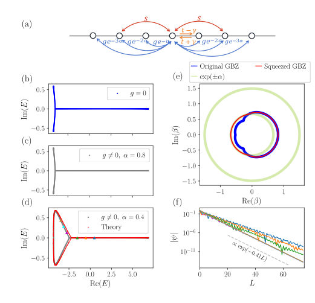
<figcaption class="paper-figure-caption"><b>Fig 1.</b> FIG. 1. Squeezing of the GBZ induced by small exponentially decaying long-range hopping. (a) The 1D model in Eq. (1), with t = 3, γ = 1, and s = 0.5. (b) OBC spectrum for g = 0. (c) OBC spectrum for g = 0.005 and α = 0.8. (d) OBC spectrum for g = 0.005 and α = 0.4. Blue/gray dots in (b–d) are ED results for L = 500. Red dots in (d) are obtained from the squeezed GBZ via h0(β), shown in (e). (e) GBZ of H0 (blue), circles |β| = e±α with α = 0.4 (green), and the squeezed GBZ (red). (f) Spatial profiles of eigenstates with energies marked in (d). Eigenstates associated with the unsqueezed part of GBZ retain their original localization lengths; eigenstates associated with the squeezed part of...</figcaption>
</figure>
<figure class="paper-figure-card">
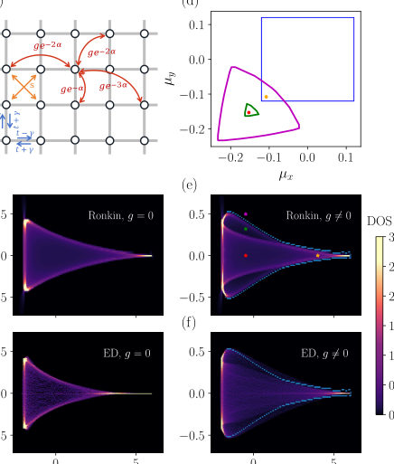
<figcaption class="paper-figure-caption"><b>Fig 2.</b> FIG. 2. The density of states (DOS) of a 2D non-Hermitian system H0 [Eq. (4)] subjected to small long-range hoppings δH [Eq. (7)]. (a) The illustrative model with fixed parameters t = 1, γ = 0.2, s = 0.5. (b) DOS of H0 calculated from the Ronkin function. (c) DOS of H0 from exact diagonalization on a square with system size L = 130. An on-site random potential distributed uniformly in [−0.5, 0.5] is added at each boundary site. (d)(e)(f) DOS squeezed by long-range hoppings with α = 0.12. (d) The minimum plateaus/points of the Ronkin function RE(µx, µy) at different energies are marked by points in (e). When the Ronkin function minima are reached at a plateau, the boundaries of the plateau...</figcaption>
</figure>
<figure class="paper-figure-card">
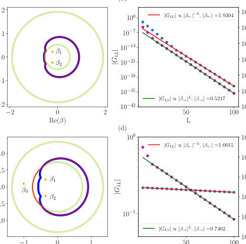
<figcaption class="paper-figure-caption"><b>Fig 3.</b> FIG. 3. The scaling of the Green’s function for h0(β) in Eq.(1) subjected to long-range hoppings δh(β) in Eq.(2). The parameters are t = 3.0, γ = 0.5, s = 0.5, g = 0.01. Upper panel: α = 0.65, ω = −6.5+0.1i. (a) GBZ of h0(β) is shown in blue, GBZ of h(β) is depicted in red, and circles e±α are shown in light green. The roots of ω−h0(β) = 0 within the plot range are indicated in yellow. (b) Scaling of the Green’s function: |G1L| ∼|β←|−Lwith |β←| = 1.9304 ≈eα; |GL1| ∼|β→|L with |β→| = 0.5217 ≈e−α. Lower panel: α = 0.3, ω = −5 + 0.1i. (c) This panel is analogous to (a). (d) Scaling of the Green’s function: |G1L| ∼|β←|−L with |β←| = 1.0015 ≈|β3|; |GL1| ∼ |β→|Lwith |β→| = 0.7402 ≈e−α.</figcaption>
</figure>
<figure class="paper-figure-card">
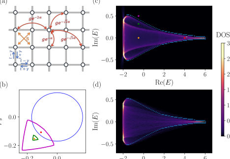
<figcaption class="paper-figure-caption"><b>Fig 4.</b> FIG. 5. DOS in a 2D system with 2-norm exponentially decaying hopping. (a) The model with long-range hopping decaying as g exp(−α p</figcaption>
</figure>
<figure class="paper-figure-card">
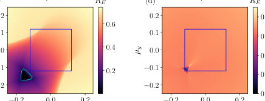
<figcaption class="paper-figure-caption"><b>Fig 5.</b> FIG. 4. Ronkin function RE(µx, µy) of different energies on the (µx, µy) plane. The blue square corresponds to the boundary of the restricted domain |µx|, |µy| ≤α. (a)(d) The minimum of the Ronkin function is reached at a single point. (b)(c) The minimum of the Ronkin function is reached on a plateau.</figcaption>
</figure>
</div>

<p><strong>Summary.</strong> This paper demonstrates that even infinitesimally weak, long-range hopping terms can drastically reshape the energy spectrum of non-Hermitian quantum systems under open boundary conditions. It develops mathematical tools, such as the squeezed GBZ and amoeba formulation, to describe this spectral reconstruction. The findings are significant because they show that the system's fundamental properties are dictated by the competition between the hopping decay rate and the system's inherent localization scale.</p>
<p><strong>Why it may be interesting.</strong> The work provides a powerful, general framework for understanding how weak, non-local interactions can fundamentally change the spectral topology and transport properties of open quantum systems, which is highly relevant for engineered quantum devices.</p>
<details>
<summary>Detailed structure</summary>
<p><strong>Main problem.</strong> The paper investigates how exponentially decaying long-range hoppings nonperturbatively reconstruct the spectrum and eigenstates of short-range non-Hermitian systems under open boundary conditions.</p>
<p><strong>Main result.</strong> Long-range hoppings cause the original Generalized Brillouin Zone (GBZ) to be replaced by a 'squeezed GBZ' in 1D, and a 'squeezed amoeba formulation' in 2D, fundamentally altering the spectral density and dynamics.</p>
<p><strong>Method.</strong> The analysis employs non-Bloch band theory, utilizing the Ronkin function and its minimization in the complex plane (amoeba formulation) to determine the spectral density of states.</p>
<p><strong>Model / system.</strong> The model consists of non-Hermitian tight-binding systems, perturbed by long-range hopping terms decaying exponentially, $e^{-\alpha |n|}$. The analysis extends to Lindbladian open systems governed by a Liouvillian equation.</p>
<p><strong>Key observables.</strong> The primary observables are the Open Boundary Condition (OBC) spectrum, the spectral density of states (DOS), and the Liouvillian gap ($\Lambda$).</p>
<p><strong>Important parameters / regimes.</strong> The competition between the decay length of the long-range hoppings ($\alpha$) and the localization length of the non-Hermitian skin modes is crucial.</p>
<p><strong>Assumptions / limitations.</strong> The analysis relies on treating the long-range hopping as a perturbation ($\delta H$) and using non-Bloch band theory techniques.</p>
<p><strong>Figures summary.</strong> Figures illustrate the squeezing of the GBZ in 1D, the comparison of DOS using the squeezed amoeba formulation in 2D, and the evolution of dynamics showing chiral damping affected by the long-range hopping strength $\alpha$.</p>
<p><strong>Paper structure.</strong> The paper develops the theory by first analyzing the 1D case using the GBZ renormalization, then generalizing to 2D using the squeezed amoeba formulation for the DOS, and finally applying the concepts to the dynamics of open quantum systems via the Liouvillian formalism.</p>
</details>
<details>
<summary>Abstract</summary>
<p>Exponentially decaying long-range hoppings are ubiquitous in realistic tight-binding models and are often truncated to obtain a finite-range description. We show that this approximation can fail dramatically in non-Hermitian systems under open boundary conditions: an infinitesimal long-range hopping can nonperturbatively reconstruct the spectrum and eigenstates of a short-range non-Hermitian system. The mechanism is controlled by a competition between the decay length of infinitesimal long-range hoppings and the localization length of non-Hermitian skin modes, leading to a sharp transition as the decay rate is tuned. In one dimension, we show that a squeezed generalized Brillouin zone (GBZ) replaces the original GBZ of the short-ranged Hamiltonian, yielding the reconstructed open-boundary spectrum. In two or higher dimensions, we formulate a squeezed amoeba formulation describing the reconstructed spectral density. We further show that long-range hoppings can qualitatively reshape Green's function, which can be readily detected in experiments.</p>
</details>
<p><sub><a href="#top">↑ back to top</a></sub></p>

<p><a id="paper-2608.27979"></a></p>
<h3 id="pulsed-single-photon-magnetometry-with-a-math163math-type-three-level-system-near-optimal-frequency-resolved-photon-counting"><a href="http://arxiv.org/abs/2608.27979v1">Pulsed single-photon magnetometry with a $Λ$-type three-level system: near-optimal frequency-resolved photon counting</a></h3>
<p><strong>Authors:</strong> Seyed Mostafa Moniri, Elnaz Darsheshdar, Mikayel Khanbekyan<br>
<strong>Type:</strong> theory · <strong>Category:</strong> other · <strong>PDF:</strong> <a href="https://arxiv.org/pdf/2608.27979v1">https://arxiv.org/pdf/2608.27979v1</a><br>
<strong>Analysis basis:</strong> full PDF text, analyzed in chunks
<strong>Topic relevance:</strong> <code>Full counting statistics</code> <strong>3/5</strong> · <code>interference shaping light</code> <strong>3/5</strong> · <code>quantum measurements</code> <strong>3/5</strong> · <code>Tavis-Cummings &amp; cavity-many-emitter</code> <strong>1/5</strong> · <code>analog quantum simulation</code> <strong>1/5</strong> · <code>correlated / nonlocal dissipation</code> <strong>1/5</strong> · <code>driven-dissipative phase transition</code> <strong>1/5</strong> · <code>methods for driven-dissipative</code> <strong>1/5</strong></p>
<div class="figure-strip-hint">↔ Scroll figures horizontally</div>
<div class="paper-figures-scroll">
<figure class="paper-figure-card">
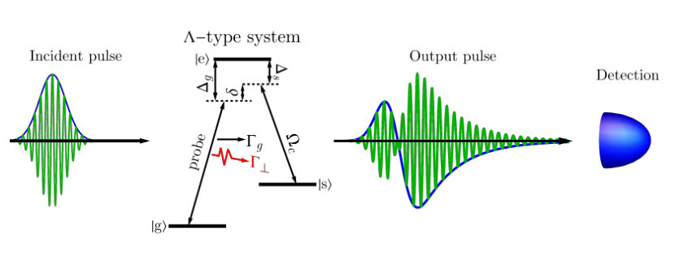
<figcaption class="paper-figure-caption"><b>Fig 1.</b> Figure 1. Schematic of pulsed single-photon magnetometry with a Zeeman-sensitive Λ-type three-level system. An incident single-photon pulse couples the |g⟩↔|e⟩transition at rate Γg, while a classical control field with Rabi frequency Ωc drives the |s⟩↔|e⟩transition. The magnetic field modifies the one-photon detuning ∆g and the two-photon detuning δ. Emission into environmental modes is described by Γ⊥.</figcaption>
</figure>
<figure class="paper-figure-card">
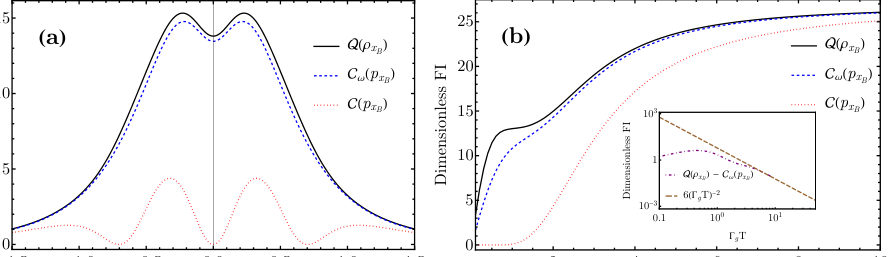
<figcaption class="paper-figure-caption"><b>Fig 2.</b> Figure 2. Magnetic-field and pulse-duration dependence for the 40Ca+ value rZ = 0.76 at critical coupling Γ⊥= Γg, with Ωc/Γg = 1 and δ0 = ∆g,0 = 0. (a) Total output-state QFI Q(ρxB), frequency-resolved CFI Cω(pxB), and photon-loss CFI C(pxB) versus xB for ΓgT = 2. (b) The same quantities versus ΓgT at xB = 0.3. The inset shows the information gap Q −Cω on log-log axes together with a T −2 reference dependence; the numerical data follow the predicted asymptotic scaling at large T.</figcaption>
</figure>
<figure class="paper-figure-card">
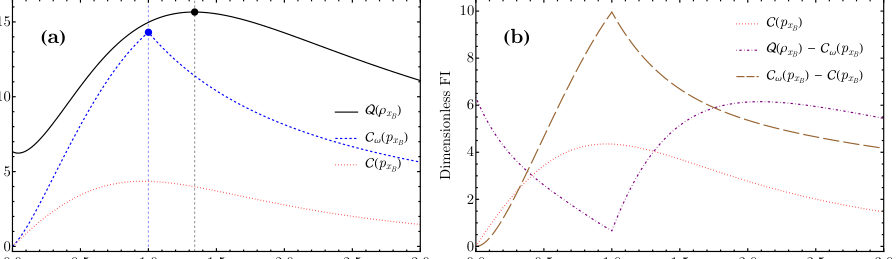
<figcaption class="paper-figure-caption"><b>Fig 3.</b> Figure 3. Information redistribution as a function of the normalized environmental coupling rate Γ⊥/Γg for rZ = 0.76, xB = 0.3, ΓgT = 2, Ωc/Γg = 1, and δ0 = ∆g,0 = 0. (a) Total QFI Q, frequency-resolved CFI Cω, and photon-loss CFI C. The blue vertical line marks critical coupling, Γ⊥/Γg = 1, while the second vertical line marks the QFI maximum at Γ⊥/Γg ≃1.34. (b) Exact decomposition into photon-loss information C, additional spectral-intensity information Cω −C, and residual spectral-phase information Q −Cω.</figcaption>
</figure>
<figure class="paper-figure-card">
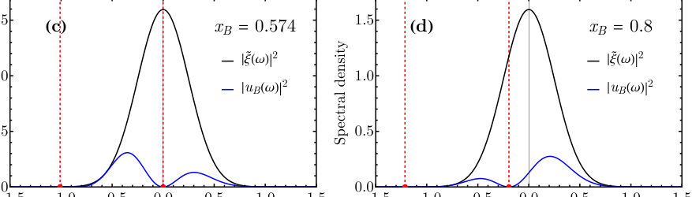
<figcaption class="paper-figure-caption"><b>Fig 4.</b> Figure 4. Incident spectral density |˜ξ(ω)|2 and output spectral density |uB(ω)|2 at critical coupling Γ⊥= Γg, for rZ = 0.76, ΓgT = 2, Ωc/Γg = 1, and δ0 = ∆g,0 = 0. The panels correspond to (a) xB = 0, (b) xB = 0.3, (c) xB = 0.574, and (d) xB = 0.8. Vertical dashed lines mark the analytical scattering-zero positions ω(0) ± . In panel (c), one zero lies at the pulse center.</figcaption>
</figure>
<figure class="paper-figure-card">
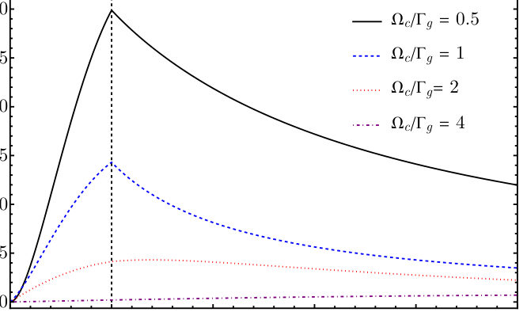
<figcaption class="paper-figure-caption"><b>Fig 5.</b> Figure 5. Frequency-resolved CFI Cω(pxB) versus Γ⊥/Γg for Ωc/Γg = 0.5, 1, 2, 4, using rZ = 0.76, xB = 0.3, ΓgT = 2, and δ0 = ∆g,0 = 0. The vertical dashed line marks critical coupling, Γ⊥= Γg. The critical feature is pronounced for weak and moderate control and becomes suppressed when the scattering zeros move away from the incident pulse bandwidth.</figcaption>
</figure>
</div>

<p><strong>Summary.</strong> The paper investigates single-photon magnetometry using a $\Lambda$-system, comparing information extraction from photon loss versus frequency-resolved photon counting. It shows that environmental coupling can enhance sensitivity, and crucially, at critical coupling, frequency-resolved counting can approach the ultimate quantum limit by accessing information previously hidden in the spectral phase.</p>
<p><strong>Why it may be interesting.</strong> This work provides a detailed theoretical framework for quantum sensing using cavity/atomic systems, specifically quantifying how different measurement observables (loss vs. spectral intensity) relate to the fundamental quantum limits (QFI) in the presence of environmental coupling.</p>
<details>
<summary>Detailed structure</summary>
<p><strong>Main problem.</strong> To determine if frequency-resolved photon counting can extract magnetic-field information from a single-photon scattering process in a $\Lambda$-type three-level system, potentially surpassing the limits set by simple photon-loss measurements.</p>
<p><strong>Main result.</strong> Frequency-resolved photon counting can capture nearly all the magnetic-field information encoded in the output state, especially at critical coupling where scattering amplitude zeros redistribute information to measurable spectral intensity.</p>
<p><strong>Method.</strong> The analysis involves deriving the asymptotic output state and decomposing the Quantum Fisher Information (QFI) into classical (photon-loss) and quantum (spectral-intensity/phase) contributions.</p>
<p><strong>Model / system.</strong> The system is a Zeeman-sensitive $\Lambda$-type three-level atom probed by a single-photon pulse and driven by a classical control field. The dynamics are analyzed using the Hamiltonian in the rotating frame, incorporating environmental coupling.</p>
<p><strong>Key observables.</strong> Quantum Fisher Information (QFI), frequency-resolved Correlation Function of Intensity ($C_\omega(pB)$), spectral intensity, and spectral phase.</p>
<p><strong>Important parameters / regimes.</strong> Environmental coupling rates ($\Gamma_g, \Gamma_\perp$), detunings ($\Delta_g, \delta$), and the ratio $\Gamma_\perp/\Gamma_g$ (especially at critical coupling).</p>
<p><strong>Assumptions / limitations.</strong> Approximations include neglecting spontaneous branching from $|e
angle	o |s
angle$ and lower-state coherence dephasing, and analyzing the long-pulse limit using Gaussian pulse profiles.</p>
<p><strong>Figures summary.</strong> Figures illustrate the schematic of the magnetometry setup, the spectral densities of the output fields at different magnetic fields, and the frequency-resolved CFI plotted against the ratio of coupling rates ($\Gamma_\perp/\Gamma_g$).</p>
<p><strong>Paper structure.</strong> The paper progresses by setting up the physical model and Hamiltonian, deriving the asymptotic output state, decomposing the QFI, and then analyzing the specific measurement scheme of frequency-resolved photon counting, culminating in the comparison between the achievable CFI and the theoretical QFI.</p>
</details>
<details>
<summary>Abstract</summary>
<p>We investigate pulsed single-photon magnetometry with a Zeeman-sensitive $Λ$-type three-level system driven by a classical control field. We derive the asymptotic output state and decompose its quantum Fisher information into photon-loss, spectral-intensity, and spectral-phase contributions. Environmental coupling reshapes the scattering response and can increase magnetic-field information. At critical coupling, real-frequency zeros of the scattering amplitude redistribute information toward measurable spectral intensity, allowing frequency-resolved photon counting to capture nearly all of the magnetic-field information encoded in the output state when the zeros lie within the pulse bandwidth. For long Gaussian pulses with a smooth, nonzero central-frequency scattering amplitude, the additional spectral-intensity contribution and residual spectral-phase information gap decrease as $T^{-2}$ or faster.</p>
</details>
<p><sub><a href="#top">↑ back to top</a></sub></p>

<p><a id="paper-2608.28521"></a></p>
<h3 id="modifying-van-der-waals-materials-via-cavity-vacuum-fluctuations"><a href="http://arxiv.org/abs/2608.28521v1">Modifying van der Waals Materials via Cavity Vacuum Fluctuations</a></h3>
<p><strong>Authors:</strong> Mohammad Hassan, Cankut Tasci, Leonardo A. Cunha, Johannes Flick<br>
<strong>Type:</strong> theory · <strong>Category:</strong> other · <strong>PDF:</strong> <a href="https://arxiv.org/pdf/2608.28521v1">https://arxiv.org/pdf/2608.28521v1</a><br>
<strong>Analysis basis:</strong> full PDF text, analyzed in chunks
<strong>Topic relevance:</strong> <code>analog quantum simulation</code> <strong>3/5</strong> · <code>Keldysh / 2PI / non-Gaussian methods</code> <strong>2/5</strong> · <code>Tavis-Cummings &amp; cavity-many-emitter</code> <strong>2/5</strong> · <code>methods for driven-dissipative</code> <strong>2/5</strong> · <code>correlated / nonlocal dissipation</code> <strong>1/5</strong> · <code>driven-dissipative phase transition</code> <strong>1/5</strong> · <code>interference shaping light</code> <strong>1/5</strong> · <code>quantum measurements</code> <strong>1/5</strong></p>
<div class="figure-strip-hint">↔ Scroll figures horizontally</div>
<div class="paper-figures-scroll">
<figure class="paper-figure-card">
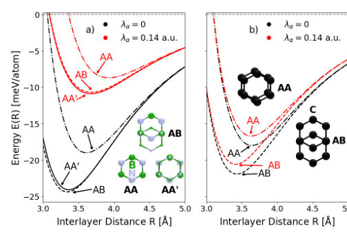
<figcaption class="paper-figure-caption"><b>Fig 1.</b> FIG. 1. Binding curves for bilayer hBN and bilayer graphene. The y-axis is the sum of the DFT energy and Exc with respect to an offset at an interlayer distance of 10 ˚A. a) Binding curves for bilayer hBN in AA, AB, and AA’ stacking. The black curves are the energies outside the cavity (λα = 0 a.u.). The red curves are the energies in the cavity with ω = 2 eV and λα = 0.14 a.u., with a single cavity mode polarized in the out-of-plane direction. b) Binding curves for bilayer graphene in AA and AB stacking.</figcaption>
</figure>
<figure class="paper-figure-card">
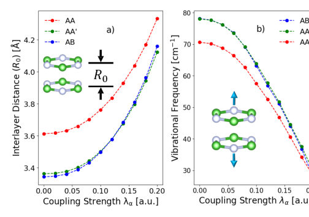
<figcaption class="paper-figure-caption"><b>Fig 2.</b> FIG. 2. Interlayer distances (a) and layer breathing mode fre- quencies (b) as a function of coupling strength for bilayer hBN in a cavity with single cavity mode polarized in the out-of-plane direction with a cavity frequency of ω = 2 eV.</figcaption>
</figure>
</div>

<p><strong>Summary.</strong> This paper develops a novel theoretical method using QEDFT to incorporate cavity vacuum fluctuations into the description of vdW materials. By applying this to bilayer hBN and graphene, the authors demonstrate that these vacuum fields can tune structural properties, such as interlayer spacing and stacking preference. This establishes cavity vacuum fluctuations as a powerful, non-invasive control mechanism for quantum materials.</p>
<p><strong>Why it may be interesting.</strong> This work directly bridges quantum optics (cavity vacuum fluctuations) with condensed matter structure (vdW materials), providing a theoretical tool to engineer material properties using fundamental quantum field effects, which is highly relevant to AMO physics.</p>
<details>
<summary>Detailed structure</summary>
<p><strong>Main problem.</strong> The study addresses how vacuum fluctuations from optical cavities can modify the ground-state structural properties of van der Waals (vdW) materials without requiring external driving fields.</p>
<p><strong>Main result.</strong> The authors predict that cavity vacuum fluctuations act as a tunable knob, causing cavity-modified stacking, increasing equilibrium interlayer distances, and softening layer breathing modes in materials like hBN and graphene.</p>
<p><strong>Method.</strong> They introduce a periodic formulation of the photon many-body dispersion (pMBD) functional within the Quantum Electrodynamical Density-Functional Theory (QEDFT) framework.</p>
<p><strong>Model / system.</strong> The system involves layered 2D vdW materials, specifically bilayer hBN and graphene. The theory models the interaction using a Hamiltonian adapted for periodic boundary conditions in reciprocal space (q-space).</p>
<p><strong>Key observables.</strong> Binding curves, cavity-mediated energy ($\Delta 	ext{Exc}$), equilibrium interlayer distances, and layer breathing mode (LBM) frequencies.</p>
<p><strong>Important parameters / regimes.</strong> Light-matter coupling strength ($\lambda$), cavity frequency ($\omega$), and the momentum transfer point (focusing on the $\Gamma$-point, $q=0$).</p>
<p><strong>Assumptions / limitations.</strong> The method assumes a periodic solid on a supercell and simplifies the calculation by assuming the cavity primarily influences the $\Gamma$-point ($q=0$).</p>
<p><strong>Figures summary.</strong> Figure 1 shows binding curves for hBN and graphene under different coupling strengths. Figure 2 illustrates the predicted expansion of interlayer distance and softening of LBM frequencies as the coupling strength increases.</p>
<p><strong>Paper structure.</strong> The paper establishes the theoretical framework (QEDFT/pMBD) to calculate cavity-modified interactions, applies this method to bilayer hBN and graphene, and presents quantitative results showing structural changes dependent on the coupling strength.</p>
</details>
<details>
<summary>Abstract</summary>
<p>In the field of cavity quantum materials, vacuum fluctuations of optical cavities are used for modifying ground-state properties of quantum materials without external driving. Here, one example is the van der Waals (vdW)/dispersion interaction in layered 2D vdW materials, where non-additive long-range correlations can dominate the interlayer binding. While cavity-induced changes of such interactions have been predicted and described using ab initio methods for molecular systems, no efficient description exists yet for extended materials. In this Letter, we close this gap by introducing a periodic formulation of the photon many-body dispersion (pMBD) functional within quantum electrodynamical density-functional theory (QEDFT). Applying this method with efficient $\textbf{q}$-point sampling to bilayer hBN and graphene, we predict cavity-modified stacking, increased equilibrium interlayer distances, and softened layer breathing modes with increasing light-matter coupling strength. Our results establish cavity vacuum fluctuations as a tuning knob for the structural properties of vdW materials.</p>
</details>
<p><sub><a href="#top">↑ back to top</a></sub></p>

<p><a id="paper-2608.27581"></a></p>
<h3 id="diamond-optomechanical-crystals-for-high-frequency-strain-and-comb-generation"><a href="http://arxiv.org/abs/2608.27581v1">Diamond optomechanical crystals for high-frequency strain and comb generation</a></h3>
<p><strong>Authors:</strong> Elham Zohari, Waleed El-Sayed, Aria Jafari, Ahmas El-hamamsy, Peyman Parsa, Joseph E. Losby, Natália C. Carvalho, Paul E. Barclay<br>
<strong>Type:</strong> both · <strong>Category:</strong> other · <strong>PDF:</strong> <a href="https://arxiv.org/pdf/2608.27581v1">https://arxiv.org/pdf/2608.27581v1</a><br>
<strong>Analysis basis:</strong> full PDF text, analyzed in chunks
<strong>Topic relevance:</strong> <code>analog quantum simulation</code> <strong>3/5</strong> · <code>quantum optics experiment</code> <strong>3/5</strong> · <code>QC/QI experiment</code> <strong>1/5</strong> · <code>Tavis-Cummings &amp; cavity-many-emitter</code> <strong>1/5</strong> · <code>driven-dissipative phase transition</code> <strong>1/5</strong> · <code>interference shaping light</code> <strong>1/5</strong> · <code>methods for driven-dissipative</code> <strong>1/5</strong> · <code>quantum measurements</code> <strong>1/5</strong></p>
<div class="figure-strip-hint">↔ Scroll figures horizontally</div>
<div class="paper-figures-scroll">
<figure class="paper-figure-card">
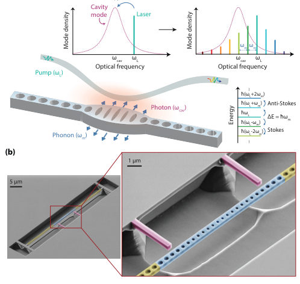
<figcaption class="paper-figure-caption"><b>Fig 1.</b> Figure 1. Diamond OMC cavity and cascaded photon–phonon interactions. (a) Schematic illustration: A continuous-wave pump laser drives an optomechanical cavity, generating Stokes and anti-Stokes sidebands through cascaded scattering with a mechanical mode at frequency ωm. The energy diagram shows the underlying phonon emission and absorption pro- cesses, producing equally spaced comb lines at ωL ± ωm. (b) False-coloured SEM image of a fabricated diamond OMC cav- ity, showing the central cavity region (blue), Bragg mirror sections (yellow), and integrated fibre-coupling support struc- tures (pink).</figcaption>
</figure>
<figure class="paper-figure-card">
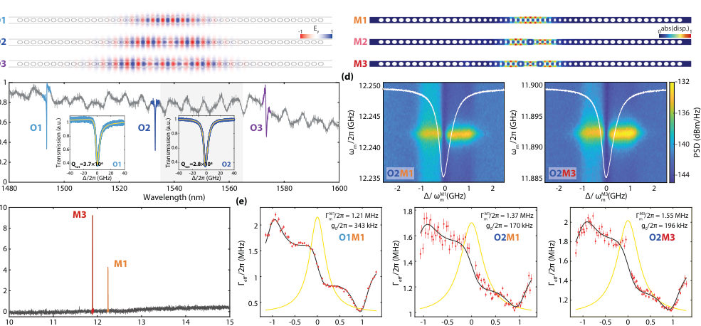
<figcaption class="paper-figure-caption"><b>Fig 2.</b> Figure 2. Diamond OMC cavity mode characterization. (a) Simulated spatial profiles of the optical and mechanical cavity modes. Left: Electric field intensity distributions of the first- (O1, 1497 nm), second- (O2, 1530 nm), and third-order (O3, 1566 nm) optical modes. Right: Mechanical displacement profiles of the first- (M1, 12.43 GHz), second- (M2, 12.27 GHz), and third-order (M3, 12.08 GHz) acoustic breathing modes. The colour scheme identifying each mode is used consistently throughout. (b) Normalized broadband transmission spectrum of the diamond OMC showing three optical resonances at 1494, 1530, and 1571 nm. The shaded region shows the operational range of the EDFA used. Insets show...</figcaption>
</figure>
<figure class="paper-figure-card">
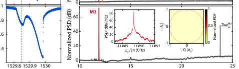
<figcaption class="paper-figure-caption"><b>Fig 3.</b> Figure 3. Thermal-to-self-oscillation transition of the M3 me- chanical mode. (a) Normalized optical transmission at input powers Pi = 7.1 mW (top) and 19.1 mW (bottom). The dashed black line indicates the laser detuning (∆/ωM3 m = 1.0) used for all measurements. (b) Normalized PSD of the op- tically transduced RF spectrum, showing thermal Brownian motion (top) and self-sustained oscillation (bottom). Insets: high-resolution PSD of the M3 mode showing linewidth nar- rowing at self-oscillation, and phase-space distributions from IQ quadrature measurements showing the PDF for thermal noise and limit-cycle oscillation.</figcaption>
</figure>
<figure class="paper-figure-card">
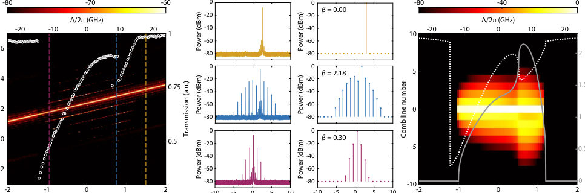
<figcaption class="paper-figure-caption"><b>Fig 4.</b> Figure 4. Cascaded photon-phonon scattering and optical frequency comb generation. (a) Two-dimensional map of the transmitted optical spectrum as a function of normalized laser-cavity detuning ∆/ωM3 m , recorded by sweeping the laser across the O2 resonance (red arrow indicates sweep direction). The overlaid white circles indicate the cavity transmission profile. (The colour scale is truncated to enhance visibility of the sideband structure.) (b) Optical spectra extracted at the three detunings marked in (a), showing the evolution of the optomechanical frequency comb. At optimal blue detuning, thirteen equally spaced comb lines appear spanning 143 GHz. The comb spacing matches the M3...</figcaption>
</figure>
<figure class="paper-figure-card">
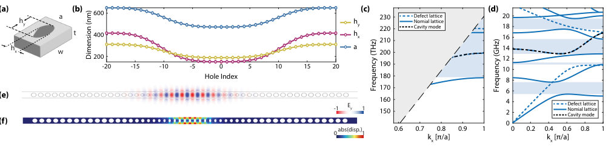
<figcaption class="paper-figure-caption"><b>Fig 5.</b> Figure 5. Device design parameters and simulated mode profiles for the 1D OMC. (a) Unit cell schematic showing a, hx, hy, w, and t. (b) Evolution of unit cell parameters through the tapered defect region. Simulated (c) optical and (d) mechanical band diagrams. Simulated fundamental (e) optical mode profile (electric field intensity) and (f) mechanical breathing-mode profile (displacement magnitude).</figcaption>
</figure>
</div>

<p><strong>Summary.</strong> Researchers developed a diamond optomechanical crystal cavity to enhance quantum optomechanical coupling. By achieving self-sustained mechanical oscillations, the device generates a large-scale optical frequency comb. This demonstrates a high dynamic strain, making the platform highly promising for controlling diamond spin qubits using light.</p>
<p><strong>Why it may be interesting.</strong> This work directly addresses the coupling of mechanical motion to optical fields in a solid-state quantum system (diamond), which is a cornerstone of cavity QED and optomechanics for quantum information processing.</p>
<details>
<summary>Detailed structure</summary>
<p><strong>Main problem.</strong> The goal is to demonstrate a diamond optomechanical crystal cavity capable of generating a high-frequency optical frequency comb while achieving a large dynamic strain for future quantum control applications.</p>
<p><strong>Main result.</strong> The system successfully generates an optical frequency comb spanning 143 GHz, corresponding to a maximum dynamic strain of $1.1 	imes 10^{-3}$ in the mechanical oscillation.</p>
<p><strong>Method.</strong> The study combines theoretical simulation (COMSOL) for device design and characterization with experimental measurements of cavity resonances and frequency comb generation under self-sustained oscillation.</p>
<p><strong>Model / system.</strong> The platform is a diamond optomechanical crystal (OMC) cavity, which leverages diamond's high elastic modulus, low absorption, and inherent spin qubits. The system supports multiple optical and mechanical resonances that are coupled via the optomechanical interaction.</p>
<p><strong>Key observables.</strong> Frequency comb spectrum (143 GHz span), peak mechanical oscillation amplitude (130 pm), total dynamic strain ($1.1 	imes 10^{-3}$), and optomechanical coupling rate ($g_0$).</p>
<p><strong>Important parameters / regimes.</strong> Mechanical resonance frequency ($\sim 12$ GHz), high mechanical quality factor ($Q_m 	imes f_m$), and the resolved-sideband regime ($\omega_m > \kappa_{tot}$).</p>
<p><strong>Assumptions / limitations.</strong> The analysis assumes the system operates in the resolved-sideband regime and requires careful modeling to account for photothermal shifts when determining the effective detuning.</p>
<p><strong>Figures summary.</strong> Figures illustrate the OMC cavity schematic, mode profiles (optical and mechanical), transmission spectra showing resonances, and the final frequency comb structure via sideband analysis.</p>
<p><strong>Paper structure.</strong> The paper progresses from device design and mode characterization (simulations) to demonstrating the transition from thermal motion to self-sustained oscillation, culminating in the quantitative measurement and analysis of the generated frequency comb.</p>
</details>
<details>
<summary>Abstract</summary>
<p>Quantum optomechanical technologies benefit from mechanical oscillators that are high-frequency, can be coherently driven, and are capable of coupling to other quantum systems. Diamond supports all of these criteria: its large elastic modulus increases mechanical resonance frequency, its low nonlinear optical absorption increases the allowed intensity of fields used for coherent optomechanics, and it hosts spin qubits that interact with mechanical modes. Here we demonstrate a diamond optomechanical crystal cavity that supports multiple mechanical resonances with $\sim$12 GHz frequency and high $Q_\text{m} \times f_\text{m}$ product that can be coherently coupled to multiple optical modes. By exciting this sideband resolved system into mechanical self-sustained oscillations, we generate a frequency comb spanning 143 GHz. Analysis of the comb spectrum, combined with systematic characterization of the system's optomechanical coupling, allows us to quantitatively show that its mechanical oscillation amplitude reaches 130 pm. This corresponds to a maximum total dynamic strain of $1.1 \times 10^{-3}$ that is sufficiently high for future demonstrations of optomechanical control of diamond spin qubits.</p>
</details>
<p><sub><a href="#top">↑ back to top</a></sub></p>

<p><a id="paper-2608.27632"></a></p>
<h3 id="machine-learning-based-characterisation-of-the-non-markovian-dynamics-of-a-nitrogen-vacancy-centre"><a href="http://arxiv.org/abs/2608.27632v1">Machine Learning-Based Characterisation of the Non-Markovian Dynamics of a Nitrogen-Vacancy Centre</a></h3>
<p><strong>Authors:</strong> Tom Lannon, Mauro Paternostro, John Martin Gregg, Amit Kumar<br>
<strong>Type:</strong> both · <strong>Category:</strong> other · <strong>PDF:</strong> <a href="https://arxiv.org/pdf/2608.27632v1">https://arxiv.org/pdf/2608.27632v1</a><br>
<strong>Analysis basis:</strong> full PDF text, analyzed in chunks
<strong>Topic relevance:</strong> <code>QC/QI experiment</code> <strong>3/5</strong> · <code>methods for driven-dissipative</code> <strong>3/5</strong> · <code>quantum measurements</code> <strong>2/5</strong> · <code>Keldysh / 2PI / non-Gaussian methods</code> <strong>1/5</strong> · <code>correlated / nonlocal dissipation</code> <strong>1/5</strong> · <code>driven-dissipative phase transition</code> <strong>1/5</strong> · <code>quantum optics experiment</code> <strong>1/5</strong></p>
<div class="figure-strip-hint">↔ Scroll figures horizontally</div>
<div class="paper-figures-scroll">
<figure class="paper-figure-card">
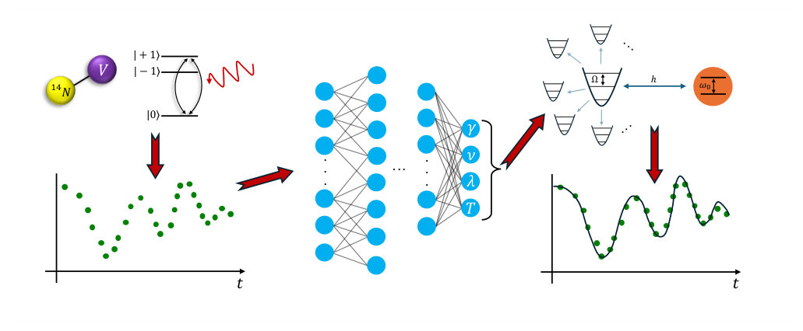
<figcaption class="paper-figure-caption"><b>Fig 1.</b> Figure 1. A schematic of the machine-learning based parameter estimation procedure. A continuous microwave signal drives the spin of the NV centre between two states, resulting in a photoluminescence signal that oscillates and decays (possibly non-monotonically) in time due to coupling to an external environment. This signal is fed into a trained neural network to perform regression on the parameters of the environment. These parameters are used to simulate a reaction coordinate model of the NV dynamics that is able to reproduce the experimental data.</figcaption>
</figure>
<figure class="paper-figure-card">
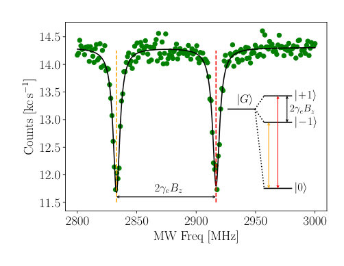
<figcaption class="paper-figure-caption"><b>Fig 2.</b> Figure 2. ODMR signal in the ground state of the NV centre. Green points are experimental data, and the black line is a fit to the fine structure Hamiltonian. The relevant energy levels and transitions for this experiment are shown in the inset.</figcaption>
</figure>
<figure class="paper-figure-card">
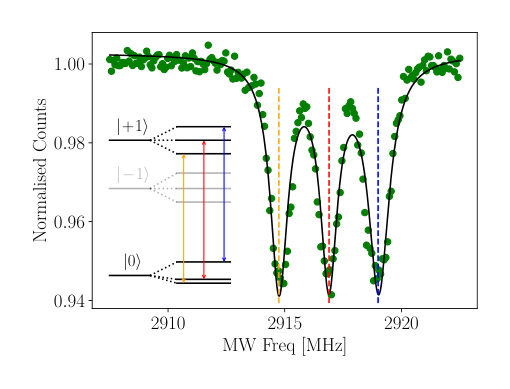
<figcaption class="paper-figure-caption"><b>Fig 3.</b> Figure 3. Normalised pulsed ODMR signal in the electronic transition |0⟩→|+1⟩of the NV centre. Green points are experimental data, and the black line is a fit to the hyperfine Hamiltonian. The relevant energy levels and transitions for this experiment are shown in the inset, and the orange dashed line indicates the transition that is addressed during Rabi oscillation experiments.</figcaption>
</figure>
<figure class="paper-figure-card">
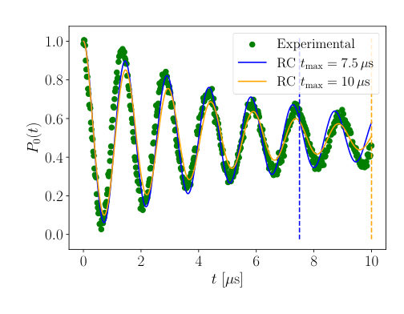
<figcaption class="paper-figure-caption"><b>Fig 4.</b> Figure 4. NV centre Rabi oscillations. The green points are experimental data normalised between the PL of the |0⟩state and the PL after the first π-pulse. The solid blue (orange) line is the RC model with parameters returned by the neural net- work trained on simulated data of duration 7.5 µs (10 µs). The vertical dashed lines indicate the duration of experimental data fed into the corresponding neural network.</figcaption>
</figure>
<figure class="paper-figure-card">
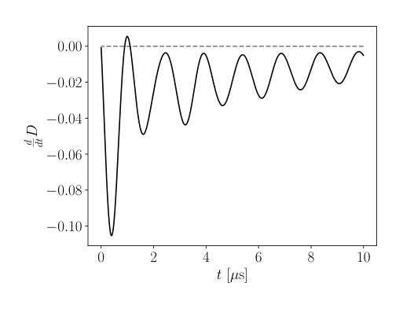
<figcaption class="paper-figure-caption"><b>Fig 5.</b> Figure 5. The time derivative of the trace distance between initial states |0⟩and |1⟩under the map corresponding to the predicted RC model. Regions above the horizontal dashed line indicate a backflow of information.</figcaption>
</figure>
</div>

<p><strong>Summary.</strong> This paper reports the first experimental use of machine learning to reconstruct the full spectral density parameters governing the non-Markovian dynamics of an NV center. By analyzing Rabi oscillations from ODMR measurements, the authors trained a neural network to estimate environmental parameters, showing performance comparable to established quantum estimation techniques.</p>
<p><strong>Why it may be interesting.</strong> This work represents a powerful synergy between quantum physics and AI, showing how ML can extract detailed spectral information about open quantum systems that is otherwise difficult to measure or model accurately.</p>
<details>
<summary>Detailed structure</summary>
<p><strong>Main problem.</strong> The primary goal is to characterize the non-Markovian dynamics of a quantum system, specifically an NV center, by reconstructing the spectral density function parameters from experimental Rabi dynamics.</p>
<p><strong>Main result.</strong> The authors successfully demonstrated that a machine learning approach can reconstruct all spectral density parameters from the NV dynamics, achieving variance estimates comparable to the Maximum Likelihood Estimator for certain parameters.</p>
<p><strong>Method.</strong> The study combines experimental measurements (ODMR/Rabi oscillations) with advanced computational techniques, using neural networks trained to map measured dynamics onto underlying environmental spectral density parameters.</p>
<p><strong>Model / system.</strong> The system is a negatively charged Nitrogen-Vacancy (NV) center in diamond, modeled as a spin-boson system. Non-Markovian dynamics are incorporated via a Reaction Coordinate (RC) mapping, which governs the system's interaction with its environment.</p>
<p><strong>Key observables.</strong> Pulsed ODMR signal, Rabi oscillations ($\langle\sigma_z(t)
angle$), and the reconstructed spectral density parameters ($\gamma, 
u, \lambda, T$).</p>
<p><strong>Important parameters / regimes.</strong> The spectral density parameters ($\gamma, 
u, \lambda, T$) characterizing the environment's coupling to the quantum system.</p>
<p><strong>Assumptions / limitations.</strong> The analysis relies on the RC mapping to handle strong coupling and non-Markovian effects, and the ML approach is benchmarked against the Cramér-Rao bound and MLE.</p>
<p><strong>Figures summary.</strong> Figures illustrate the ODMR signal and Rabi oscillations, showing experimental data compared against fits derived from the RC model and the ML reconstruction process.</p>
<p><strong>Paper structure.</strong> The paper introduces the physical model (NV center, spin-boson), details the experimental measurements (ODMR/Rabi), presents the ML methodology for parameter estimation, compares its performance against theoretical bounds (CRB/MLE), and concludes with a proposed two-step estimation workflow.</p>
</details>
<details>
<summary>Abstract</summary>
<p>The interaction between a quantum system and its environment can be characterized by the spectral density function: knowing its structure is important for optimizing applications of quantum technologies such as quantum sensing protocols. In this work, we present the first experimental demonstration of a machine learning-based reconstruction of reaction-coordinate spectral density parameters from NV centre Rabi dynamics. Unlike the previous work, we recover all spectral density parameters rather than only the central frequency, and benchmark the performance of the neural network against the Cramér-Rao bound and maximum likelihood estimator. Our results demonstrate that the model predicted by the neural network can reliably reproduce the NV dynamics over the estimation window, and can produce estimates for some parameters with variances comparable to that of maximum likelihood.</p>
</details>
<p><sub><a href="#top">↑ back to top</a></sub></p>

<p><a id="paper-2608.28012"></a></p>
<h3 id="correlated-disorder-versus-correlated-noise-ordering-in-active-systems"><a href="http://arxiv.org/abs/2608.28012v1">Correlated disorder versus correlated noise: Ordering in active systems</a></h3>
<p><strong>Authors:</strong> Sudip Mukherjee, Abhik Basu<br>
<strong>Type:</strong> theory · <strong>Category:</strong> statistical mechanics · <strong>PDF:</strong> <a href="https://arxiv.org/pdf/2608.28012v1">https://arxiv.org/pdf/2608.28012v1</a><br>
<strong>Analysis basis:</strong> full PDF text, analyzed in chunks
<strong>Topic relevance:</strong> <code>driven-dissipative phase transition</code> <strong>3/5</strong> · <code>non-equilibrium universality</code> <strong>3/5</strong> · <code>Keldysh / 2PI / non-Gaussian methods</code> <strong>2/5</strong> · <code>methods for driven-dissipative</code> <strong>2/5</strong> · <code>correlated / nonlocal dissipation</code> <strong>1/5</strong></p>
<div class="figure-strip-hint">↔ Scroll figures horizontally</div>
<div class="paper-figures-scroll">
<figure class="paper-figure-card">
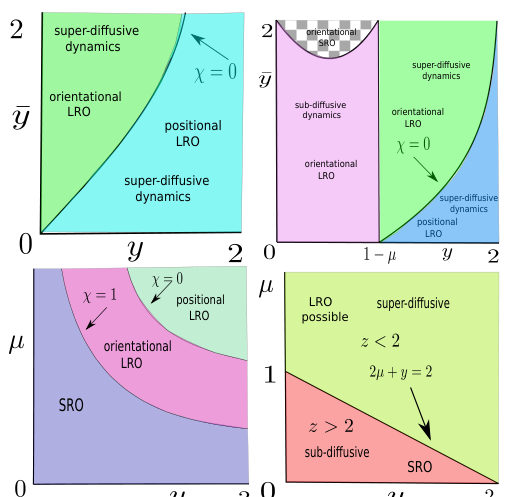
<figcaption class="paper-figure-caption"><b>Fig 1.</b> FIG. 1: Schematic phase diagrams in 2D for an active surface with quenched tangential velocity: (a) In the y −¯y plane for a fixed µ with µ &gt; 1. Phases with positional LRO (blue) and or- intational LRO but positional SRO (green) are marked. The phase boundary is given by χ = 0. The dynamics is super- diffusive everywhere. For the 2D NRB XY model, the phases are phase LRO (blue) and phase SRO (green). (b) For y −¯y plane for a fixed µ with µ &lt; 1. Phases with positional LRO and super-diffusive dynamics (blue), orientational LRO but positional SRO with super-diffusive dynamics (green), orien- tational LRO but positional SRO with sub-diffusive dynamics (red) and orientational SRO (checkerboard)...</figcaption>
</figure>
<figure class="paper-figure-card">
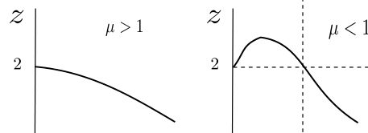
<figcaption class="paper-figure-caption"><b>Fig 2.</b> FIG. 2: Variation of z with y in 2D for a fixed µ. (a) µ &gt; 1: z monotonically decreases with y, starting from 2 at y →0. (b) µ &lt; 1: z first rises from 2 at y →0, then decreases monotonically with y, crossing 2 at y = 1 −µ to become less than 2. Thus z has a non-monotonic dependence on y. See text.</figcaption>
</figure>
<figure class="paper-figure-card">
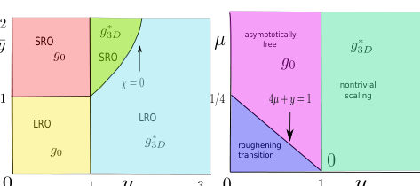
<figcaption class="paper-figure-caption"><b>Fig 3.</b> FIG. 3: (a) Phase diagram of the 3D NRB XY model in the y −¯y plane. Phase LRO controlled by the nontrivial fixed point g∗ 3D (blue), phase SRO controlled by g∗ 3D (green), LRO controlled by g0 = 0 (yellow) and SRO controlled by g0 = 0 (red) are marked. The phase boundary between phase LRO and phase SRO, both controlled by g∗ 3D is given by χ = 0. (b) Phases in the y −µ plane: Phases controlled by g∗ 3D with nontrivial scaling different from those in the linear or free theory (phase LRO or phase SRO, green), roughening tran- sition between asymptotically free phase LRO or SRO and perturbatively inaccessible strong coupling phases (violate) and asymptotically free with linear theory scaling...</figcaption>
</figure>
</div>

<p><strong>Summary.</strong> This theoretical work explores how correlated disorder influences ordering in non-equilibrium active systems, specifically using the nonreciprocal XY model. By applying renormalization group techniques, the authors demonstrate that long-range disorder can stabilize long-range order in 2D and 3D, even when the clean system would otherwise exhibit only short-range order. This provides a quantitative framework for understanding disorder-induced order in driven matter.</p>
<p><strong>Why it may be interesting.</strong> The study of non-equilibrium phase transitions driven by disorder is crucial for understanding complex active matter systems, which often lack simple thermal equilibrium descriptions.</p>
<details>
<summary>Detailed structure</summary>
<p><strong>Main problem.</strong> The paper investigates whether quenched disorder can induce long-range order in driven, non-equilibrium systems, contrasting this effect with the influence of long-range noise.</p>
<p><strong>Main result.</strong> Sufficiently long-range quenched disorder can induce long-range order in 2D nonreciprocal XY systems, and in 3D, disorder combined with nonreciprocity creates a novel transition between strong-coupling and noninteracting regimes.</p>
<p><strong>Method.</strong> The analysis employs a hydrodynamic model and utilizes perturbative Dynamic Renormalization Group (RG) techniques to study the scaling behavior of the system parameters.</p>
<p><strong>Model / system.</strong> The primary model is the nonreciprocal XY (NRB XY) system, described by a hydrodynamic equation. The system is driven by quenched disorder (correlated velocities) and potentially long-range noise.</p>
<p><strong>Key observables.</strong> Long-range order (LRO) vs. Short-range order (SRO), dynamic relaxation exponents (super/sub-diffusive), and scaling exponents (z, $\chi$).</p>
<p><strong>Important parameters / regimes.</strong> The disorder correlation exponent ($y$), the noise correlation exponent ($ar{y}$), and the disorder strength parameter ($\mu$).</p>
<p><strong>Assumptions / limitations.</strong> The analysis relies on a hydrodynamic description and uses perturbative RG methods, assuming non-local correlation functions for disorder and noise.</p>
<p><strong>Figures summary.</strong> Figures illustrate phase diagrams in 2D and 3D space (e.g., $y-ar{y}$ or $y-\mu$ planes), mapping out boundaries between LRO and SRO phases based on disorder and noise parameters.</p>
<p><strong>Paper structure.</strong> The paper proceeds by analyzing the 2D case to show LRO induction, then extends the analysis to 3D using RG flow equations to map out phase transitions between different coupling regimes.</p>
</details>
<details>
<summary>Abstract</summary>
<p>Can quenched disorder generate ordering in driven systems? Using a recently proposed hydrodynamic model, we show that sufficiently long-ranged quenched disorder can induce long-range order in two-dimensional (2D) nonreciprocal XY systems, even when the clean system exhibits only short-range order at finite noise. Active surfaces tangentially advected by quenched velocities, governed by the same hydrodynamic equation, become statistically flat with super- or subdiffusive relaxation. In three dimensions (3D), quenched disorder combined with nonreciprocity produces a novel transition between strong-coupling and asymptotically noninteracting regimes, supporting either long- or short-range order. In both 2D and 3D, the exponents are nonuniversal, which vary continuously with the degree of transversality of the quenched disorder. The degree of transversality of the quenched disorder can be tuned to induce transitions in the model for fixed disorder and noise variances.</p>
</details>
<p><sub><a href="#top">↑ back to top</a></sub></p>

<p><a id="paper-2608.27625"></a></p>
<h3 id="turning-zeeman-splitting-into-switchable-charge-polarization-in-a-double-quantum-dot"><a href="http://arxiv.org/abs/2608.27625v1">Turning Zeeman splitting into switchable charge polarization in a double quantum dot</a></h3>
<p><strong>Authors:</strong> Chi Sun, Jacob Linder<br>
<strong>Type:</strong> theory · <strong>Category:</strong> strongly correlated electrons · <strong>PDF:</strong> <a href="https://arxiv.org/pdf/2608.27625v1">https://arxiv.org/pdf/2608.27625v1</a><br>
<strong>Analysis basis:</strong> full PDF text, analyzed in chunks
<strong>Topic relevance:</strong> <code>Keldysh / 2PI / non-Gaussian methods</code> <strong>3/5</strong> · <code>methods for driven-dissipative</code> <strong>3/5</strong> · <code>analog quantum simulation</code> <strong>2/5</strong> · <code>driven-dissipative phase transition</code> <strong>1/5</strong> · <code>quantum measurements</code> <strong>1/5</strong></p>
<div class="figure-strip-hint">↔ Scroll figures horizontally</div>
<div class="paper-figures-scroll">
<figure class="paper-figure-card">
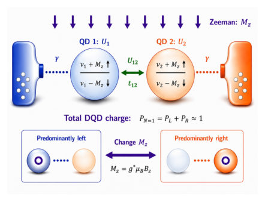
<figcaption class="paper-figure-caption"><b>Fig 1.</b> FIG. 1. Double quantum dot (DQD) charge-qubit setup. Two inter- acting QDs, with onsite Coulomb interactions 𝑈1,2, are coupled by the interdot interaction 𝑈12 and tunneling 𝑡12, and separately coupled to electronic reservoirs with strength 𝛾. A uniform Zeeman field 𝑀𝑧 shifts the gate levels as 𝑣𝑖𝜎= 𝑣𝑖+𝜎𝑀𝑧. In the single-electron regime, 𝑃𝑁=1 = 𝑃𝐿+ 𝑃𝑅≃1, varying 𝑀𝑧controls the charge distribution between the two QDs.</figcaption>
</figure>
<figure class="paper-figure-card">
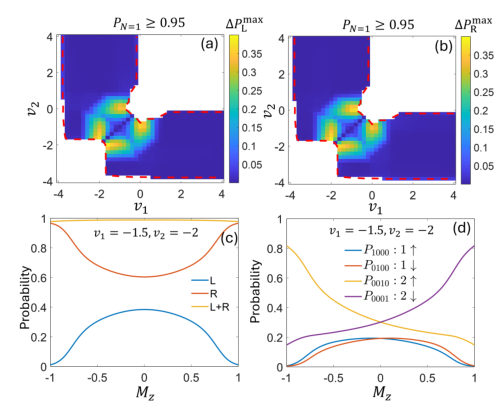
<figcaption class="paper-figure-caption"><b>Fig 2.</b> FIG. 2. Magnetic charge reconfiguration for 𝑈1 = 𝑈2. (a,b) Maximum field-induced changes Δ𝑃max 𝐿,𝑅(𝑣1, 𝑣2) = max|𝑀𝑧|≤1 |𝑃𝐿,𝑅(𝑣1, 𝑣2; 𝑀𝑧) −𝑃𝐿,𝑅(𝑣1, 𝑣2; 0)|, restricted to 𝑃𝑁=1 ≥ 0.95 throughout the field sweep |𝑀𝑧| ≤1. (c) Left, right, and total single-electron probabilities and (d) the four spin-resolved single- electron probabilities versus 𝑀𝑧at 𝑣1 = −1.5 and 𝑣2 = −2. Parameters are 𝑈1 = 𝑈2 = 4, 𝑈12 = 3, 𝑡12 = 0.3, 𝑇= 0.05, and 𝛾= 0.05, with Δ𝑖𝜎= −𝑖𝛾/2. The red dashed line in (a,b) denotes the boundary 𝑃𝑁=1 = 0.95 and the white regions outside the red dashed line do not satisfy the 𝑃𝑁=1 ≥0.95 criterion.</figcaption>
</figure>
<figure class="paper-figure-card">
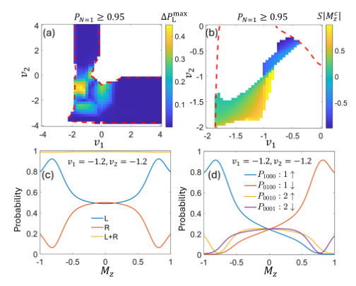
<figcaption class="paper-figure-caption"><b>Fig 3.</b> FIG. 3. Magnetic charge switching for 𝑈1 ≠𝑈2. (a) Maximum charge redistribution Δ𝑃max 𝐿 . (b) Signed switching threshold 𝑆|𝑀𝑐 𝑧|, where 𝑃𝐿(𝑀𝑐 𝑧) = 𝑃𝑅(𝑀𝑐 𝑧) and 𝑆&gt; 0 (𝑆&lt; 0) denotes right-to-left (left-to- right) switching. (c) Left, right, and total single-electron probabilities and (d) spin-resolved probabilities versus 𝑀𝑧at 𝑣1 = 𝑣2 = −1.2. The red dashed line in (a,b) denotes the boundary 𝑃𝑁=1 = 0.95 throughout |𝑀𝑧| ≤1 and the white regions outside the red dashed line do not satisfy the 𝑃𝑁=1 ≥0.95 criterion. Here 𝑈1 = 2, 𝑈2 = 4, and 𝑈12 = 3.5; other parameters are as in Fig. 2.</figcaption>
</figure>
<figure class="paper-figure-card">
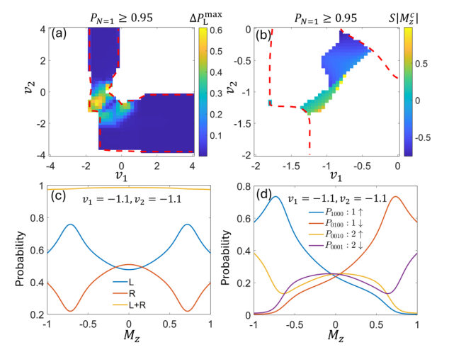
<figcaption class="paper-figure-caption"><b>Fig 4.</b> FIG. 4. Magnetic charge switching for 𝑈1 ≠𝑈2. (a) Maximum charge redistribution Δ𝑃max 𝐿 . (b) Signed switching threshold 𝑆|𝑀𝑐 𝑧|, where 𝑃𝐿(𝑀𝑐 𝑧) = 𝑃𝑅(𝑀𝑐 𝑧) and 𝑆&gt; 0 (𝑆&lt; 0) denotes right-to-left (left-to-right) switching. (c) Left, right, and total single-electron probabilities and (d) spin-resolved probabilities versus 𝑀𝑧at 𝑣1 = 𝑣2 = −1.1. The red dashed line in (a,b) denotes the boundary 𝑃𝑁=1 = 0.95 throughout |𝑀𝑧| ≤1 and the white regions outside the red dashed line do not satisfy the 𝑃𝑁=1 ≥0.95 criterion. Here 𝑈1 = 2, 𝑈2 = 4 and 𝑈12 = 2.5, satisfying 𝑈12 &lt; √𝑈1𝑈2; other parameters are as in Fig. 3 in the main text.</figcaption>
</figure>
</div>

<p><strong>Summary.</strong> This theoretical study demonstrates that a uniform magnetic field can be used to switch the charge polarization between two quantum dots, even if the dots are otherwise symmetric. This control arises because the coupling to external reservoirs and the presence of Coulomb interactions allow the uniform spin splitting to manifest as a directional charge bias. The findings establish a robust mechanism for magnetic control of charge qubits.</p>
<p><strong>Why it may be interesting.</strong> This work provides a detailed theoretical mechanism for controlling charge polarization using magnetic fields in strongly correlated nanoscale systems, which is highly relevant for quantum computing architectures based on charge qubits.</p>
<details>
<summary>Detailed structure</summary>
<p><strong>Main problem.</strong> To determine if a uniform Zeeman field can induce a controllable left-right charge polarization in an asymmetric double quantum dot (DQD), contrary to initial expectations.</p>
<p><strong>Main result.</strong> The authors show that in an open, interacting DQD, the uniform Zeeman field can strongly reconfigure and even reverse the single-electron charge polarization through mechanisms involving unequal gate levels or unequal onsite interactions.</p>
<p><strong>Method.</strong> The study employs a symmetry-preserving Green's-function Equation-of-Motion (EOM) approach, solving for density correlators up to three-body terms to reconstruct the full probability distribution over the system's Fock states.</p>
<p><strong>Model / system.</strong> The system is an open, interacting double quantum dot (DQD) coupled to electronic reservoirs. The Hamiltonian includes intra-dot and inter-dot Coulomb repulsions, and the magnetic field enters via Zeeman splitting, $M_z$.</p>
<p><strong>Key observables.</strong> Left-localized probability ($P_L$), right-localized probability ($P_R$), and the resulting charge polarization $D = P_L - P_R$.</p>
<p><strong>Important parameters / regimes.</strong> Zeeman field strength ($M_z$), gate detuning ($v_1 - v_2$), and onsite interaction differences ($U_1 - U_2$).</p>
<p><strong>Assumptions / limitations.</strong> The EOM hierarchy is truncated, and the authors use a symmetry-preserving closure technique to ensure the calculated correlators are free from artificial route dependence.</p>
<p><strong>Figures summary.</strong> Figures illustrate the magnetic field dependence of charge reconfiguration ($\Delta P_{	ext{max}}$) for both unequal gate levels and unequal onsite interactions, showing the switching behavior of $P_L$ and $P_R$ versus $M_z$.</p>
<p><strong>Paper structure.</strong> The paper first establishes the theoretical framework using the EOM approach, then analyzes the case of level asymmetry ($v_1 
eq v_2$), followed by the case of interaction asymmetry ($U_1 
eq U_2$), concluding with a discussion of the underlying physics of open-system conversion.</p>
</details>
<details>
<summary>Abstract</summary>
<p>A magnetic field that acts identically on two quantum dots is not expected to move charge between them. Nevertheless, we show that a uniform Zeeman field can strongly reconfigure and even reverse the single-electron charge polarization of an asymmetric open double quantum dot. Using a symmetry-preserving Green's-function equation-of-motion approach, we identify regimes where the preferred dot occupation reverses while the system remains in the single-electron charge sector. Two distinct mechanisms produce this behavior. Unequal gate levels produce different occupation responses because the Zeeman-shifted resonances lie at different positions relative to the reservoir chemical potential, whereas unequal onsite interactions distinguish the dots through their many-body addition spectra. Coulomb blockade stabilizes the single-electron sector, causing the reservoir-mediated response to appear as spatial charge redistribution rather than a change in total occupation. Our results establish a mechanism for magnetic control of charge polarization at fixed electrostatic detuning.</p>
</details>
<p><sub><a href="#top">↑ back to top</a></sub></p>

<p><a id="paper-2608.28519"></a></p>
<h3 id="beyond-sensitivity-mechanism-resolved-error-budgets-for-designing-quantum-sensors"><a href="http://arxiv.org/abs/2608.28519v1">Beyond sensitivity: mechanism-resolved error budgets for designing quantum sensors</a></h3>
<p><strong>Authors:</strong> Nima Leclerc, Marco Capelli, Kevin James Rietwyk, Mark Dong, Dmitry Lyakh, Geoffrey Iwata, Brandon Rodenburg, Sean Oliver, Benedikt Kloss, Jin-Sung Kim, Stefan Bogdanovic, Yunheng Chen, Meysam Sharifzadeh Mirshekarloo, Cedric Weber, Marcus Doherty, Ethan Pratt, Joseph Hagmann<br>
<strong>Type:</strong> theory · <strong>Category:</strong> other · <strong>PDF:</strong> <a href="https://arxiv.org/pdf/2608.28519v1">https://arxiv.org/pdf/2608.28519v1</a><br>
<strong>Analysis basis:</strong> full PDF text, analyzed in chunks
<strong>Topic relevance:</strong> <code>methods for driven-dissipative</code> <strong>3/5</strong> · <code>quantum measurements</code> <strong>3/5</strong> · <code>Keldysh / 2PI / non-Gaussian methods</code> <strong>1/5</strong> · <code>correlated / nonlocal dissipation</code> <strong>1/5</strong> · <code>driven-dissipative phase transition</code> <strong>1/5</strong></p>
<div class="figure-strip-hint">↔ Scroll figures horizontally</div>
<div class="paper-figures-scroll">
<figure class="paper-figure-card">
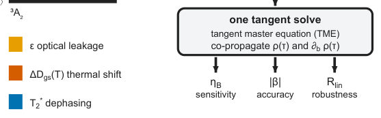
<figcaption class="paper-figure-caption"><b>Fig 1.</b> Figure 1: Per-mechanism, multi-metric attribution from one open quantum system model. A single open-system solve returns a sensor’s three performance metrics, its sensitivity (ηB, the smallest field resolvable per unit bandwidth), accuracy (limited by the systematic bias β of the recovered field), and robustness (Rlin, the stability of the sensitivity under parameter drift), and attributes each to individual physical mechanisms. (a) Simplified level scheme of the nitrogen-vacancy (NV) center. Optical pumping at 532 nm and spin-selective intersystem crossing (ISC) through the singlet set the readout contrast C, the microwave drive Ωaddresses the |0⟩↔|−1⟩ transition whose splitting responds...</figcaption>
</figure>
<figure class="paper-figure-card">
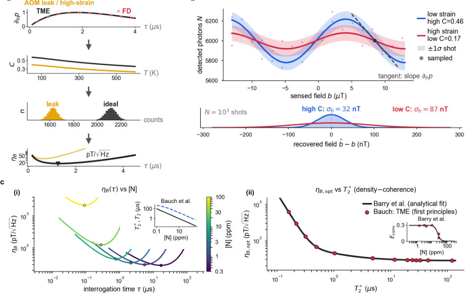
<figcaption class="paper-figure-caption"><b>Fig 2.</b> Figure 2: Validation of the first-principles sensitivity engine. The engine computes the shot-noise-limited sensitivity ηB (smallest field resolvable per unit bandwidth) as a function of the interrogation time τ. (a) The single-solve pipeline, from the field derivative ∂bρ(τ) of the density matrix (computed by the tangent master equation and checked against finite differencing, red circles; agreement &lt; 10−4) through the readout contrast C and the photon statistics to ηB(τ). Each stage is traced for an ideal, low-strain ensemble (black) and a degraded case combining high transverse strain with acousto-optic-modulator (AOM) leakage (orange). The AOM gates the pump laser on for initialization...</figcaption>
</figure>
<figure class="paper-figure-card">
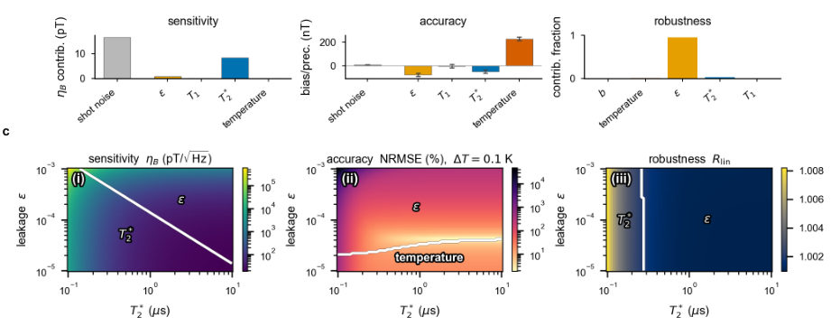
<figcaption class="paper-figure-caption"><b>Fig 3.</b> Figure 3: Metric-dependent attribution. For a fixed device, the per-mechanism budget of each metric, computed from one open-system solve: sensitivity (ηB), accuracy (the systematic bias, summarized by the root-mean-square error, RMSE), and robustness (the linearized drift index Rlin, equal to one when drift leaves the sensitivity untouched). (a) Per-mechanism contribution versus interrogation time τ (solid, left axis; Eq. 5), one panel per metric, with the mechanisms color-coded (dephasing T ⋆ 2 in blue, optical leakage ε in orange, thermal shift in vermillion, and longitudinal relaxation T1 in gray). The shares are Shapley values for sensitivity and accuracy and the additive...</figcaption>
</figure>
<figure class="paper-figure-card">
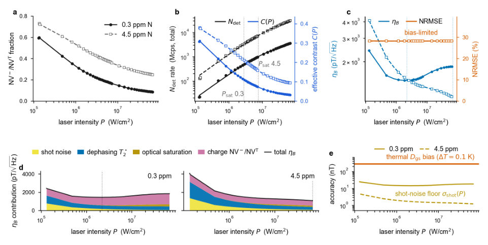
<figcaption class="paper-figure-caption"><b>Fig 4.</b> Figure 4: Metric-dependent attribution on a measured operating knob. The optical readout intensity P serves as a measured control knob on two diamonds of differing nitrogen content (0.3 and 4.5 ppm; solid and dashed curves). (a) the measured NV−/NVT charge fraction (the spin-active fraction of centers) versus laser intensity P. (b) the detected-photon budget Ndet(P) (saturation intensities marked) and the effective readout contrast Ceff(P). (c) the sensitivity ηB(P) (smallest field resolvable per unit bandwidth, left axis), with an interior optimum on the 0.3 ppm diamond, and the accuracy as a normalized root-mean-square error NRMSE(P) (right axis), flat because it is limited by a...</figcaption>
</figure>
<figure class="paper-figure-card">
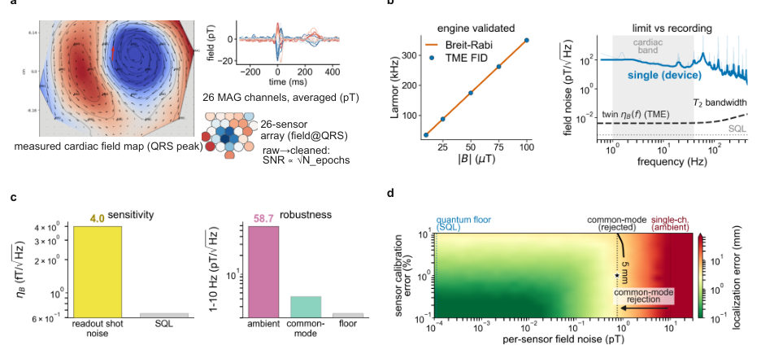
<figcaption class="paper-figure-caption"><b>Fig 5.</b> Figure 5: One framework, two platforms: design by specification on a real scalar-OPM magnetocardiogram. A 26-sensor scalar (total-field) cesium (Cs) optically pumped magnetometer (OPM) array, unshielded at the geomagnetic field, records a human magnetocardiogram. (a) The measured cardiac-dipole field map at the QRS peak (the largest deflection of the heartbeat), the averaged waveform, and the array geometry. (b) The model grounded in the recording: the Larmor frequency versus the exact Breit–Rabi prediction, and the frequency-resolved sensitivity ηB(f) with its fundamental spin-projection (standard-quantum-limit) floor, against the measured field noise. (c) The sensitivity and robustness...</figcaption>
</figure>
</div>

<p><strong>Summary.</strong> This paper presents a novel framework to analyze quantum sensors by calculating performance metrics like sensitivity, accuracy, and robustness simultaneously. It uses open quantum system theory and Shapley values to attribute the limitation of each metric to specific physical mechanisms. This allows engineers to design sensors by targeting the root cause of performance degradation rather than just optimizing for sensitivity.</p>
<p><strong>Why it may be interesting.</strong> This work provides a rigorous, quantitative framework for characterizing and actively controlling quantum sensors by decomposing performance limitations into fundamental physical mechanisms, which is crucial for next-generation quantum sensing hardware.</p>
<details>
<summary>Detailed structure</summary>
<p><strong>Main problem.</strong> Current quantum sensor characterization methods fail to provide a mechanism-resolved budget for multiple performance metrics (sensitivity, accuracy, robustness).</p>
<p><strong>Main result.</strong> The authors introduce a framework that attributes each performance metric to its specific limiting physical mechanism, showing that the dominant limiter differs across metrics.</p>
<p><strong>Method.</strong> The method uses an open quantum system simulation solved via a tangent-linear construction, employing Shapley values to perform non-additive error attribution.</p>
<p><strong>Model / system.</strong> The analysis is based on modeling the sensor as an open quantum system whose evolution is governed by a Lindblad master equation, applicable to platforms like NV diamond ensembles and OPMs.</p>
<p><strong>Key observables.</strong> Sensitivity ($\eta_B$), Accuracy (systematic bias $eta$), and Robustness ($R_{lin}$); error contributions attributed to specific mechanisms (e.g., dephasing, thermal shift).</p>
<p><strong>Important parameters / regimes.</strong> Interrogation time ($   au$), environmental noise parameters, and the set of controllable device parameters ($   heta$).</p>
<p><strong>Assumptions / limitations.</strong> The sensor dynamics can be accurately described by an open quantum system, and the readout must be sufficiently informative to separate contributions from different error mechanisms.</p>
<p><strong>Figures summary.</strong> Figures illustrate the per-mechanism attribution (Shapley share) for the three metrics, and later figures detail the closed-loop process for online adaptation and diagnosis.</p>
<p><strong>Paper structure.</strong> The paper first establishes the need for multi-metric error budgeting, introduces the open-system/tangent-solve framework, demonstrates metric-dependent attribution using NV diamond examples, and concludes by outlining an adaptive, closed-loop control strategy.</p>
</details>
<details>
<summary>Abstract</summary>
<p>Quantum sensors are specified by a headline sensitivity, yet applications also demand accuracy and reliability. The dominant limiter of one metric is often known, but no method resolves how interacting mechanisms combine into a signed, per-mechanism budget for each metric. We introduce a framework that computes a sensor's sensitivity, accuracy, and robustness from one open-system simulation and attributes each to its limiting mechanism. For a nitrogen-vacancy diamond ensemble the attribution inverts across metrics: dephasing limits sensitivity, the thermal ground-state shift limits accuracy, and optical leakage limits robustness. At identical sensitivity the recovered-field bias spans $8$ to $1500$\,nT, so tuning to sensitivity alone can miss the accuracy target by two orders of magnitude. The same modeling transfers to a cesium optically pumped magnetometer recording a human magnetocardiogram. As a digital twin, it predicts the gain from addressing each limiter, so sensors can be designed to the required metrics.</p>
</details>
<p><sub><a href="#top">↑ back to top</a></sub></p>

<p><a id="paper-2608.27551"></a></p>
<h3 id="detecting-axion-like-particles-with-coiled-optical-fibers-i-silica-fibers"><a href="http://arxiv.org/abs/2608.27551v1">Detecting Axion-Like Particles With Coiled Optical Fibers I: Silica Fibers</a></h3>
<p><strong>Authors:</strong> Gia Dvali, Sebastian Zell, Tongxuan Zhang<br>
<strong>Type:</strong> theory · <strong>Category:</strong> other · <strong>PDF:</strong> <a href="https://arxiv.org/pdf/2608.27551v1">https://arxiv.org/pdf/2608.27551v1</a><br>
<strong>Analysis basis:</strong> full PDF text, analyzed in chunks
<strong>Topic relevance:</strong> <code>interference shaping light</code> <strong>3/5</strong> · <code>analog quantum simulation</code> <strong>2/5</strong> · <code>methods for driven-dissipative</code> <strong>2/5</strong> · <code>Keldysh / 2PI / non-Gaussian methods</code> <strong>1/5</strong> · <code>quantum measurements</code> <strong>1/5</strong></p>
<div class="figure-strip-hint">↔ Scroll figures horizontally</div>
<div class="paper-figures-scroll">
<figure class="paper-figure-card">
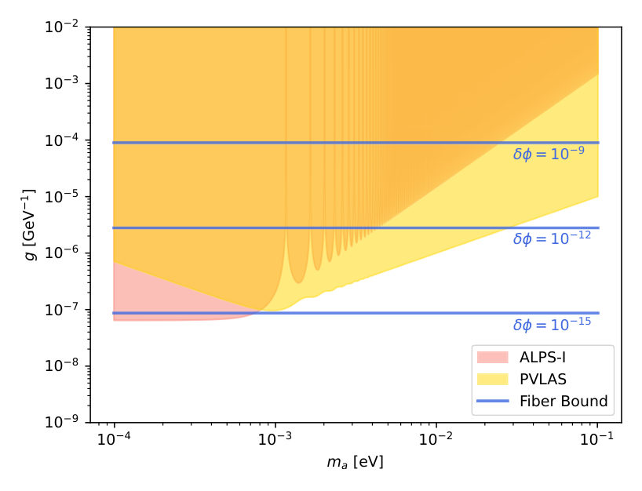
<figcaption class="paper-figure-caption"><b>Fig 1.</b> Figure 1: The exclusion plot for previous experiments and the proposed fiber-based interferometer. The results shown for comparison are taken from ALPS-I [48] and PVLAS [8] experiments. The parameters used for the calculation of the fiber bound according to eq. (1.2) are n = 1.5, ω = 1 eV, B = 5 T, L = 105 m, and different values of δϕ shown in the plot below each bound.</figcaption>
</figure>
<figure class="paper-figure-card">
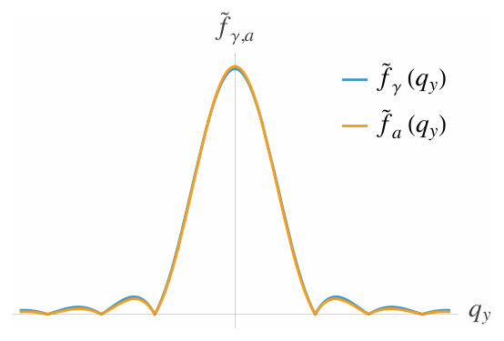
<figcaption class="paper-figure-caption"><b>Fig 2.</b> Figure 2: A sketch for the comparison of the photon and ALP transverse profiles in momentum space. Here, ˜fγ(qy) and ˜fa(qy) are obtained by the Fourier transform of sin(k⊥y)1{0≤y≤l} and fa(y), respectively. We use the absolute value for plotting.</figcaption>
</figure>
</div>

<p><strong>Summary.</strong> This paper details a theoretical proposal for detecting Axion-Like Particles (ALPs) using long, coiled optical fibers placed in a magnetic field. By developing a framework that accounts for boundary effects in the fiber, the authors show that the most promising observable is the phase shift of the photon. This technique offers a pathway to constrain ALP properties, especially for larger ALP masses, complementing existing astrophysical searches.</p>
<p><strong>Why it may be interesting.</strong> This work is highly relevant to quantum optics and open quantum systems as it models particle mixing (photon $\leftrightarrow$ ALP) within a structured, confined waveguide (the fiber), requiring the application of boundary conditions to the quantum field equations.</p>
<details>
<summary>Detailed structure</summary>
<p><strong>Main problem.</strong> The paper proposes a novel method to search for Axion-Like Particles (ALPs) by exploiting photon-ALP conversion within long, coiled optical fibers subjected to an external magnetic field.</p>
<p><strong>Main result.</strong> For solid silica fibers, the primary detectable signal is a phase shift of the photon, allowing for setting new constraints on the ALP coupling constant, particularly for large ALP masses.</p>
<p><strong>Method.</strong> The authors develop a theoretical framework incorporating transverse boundary conditions and fiber bending to model the photon-ALP mixing, solving coupled differential equations derived from the interaction Lagrangian.</p>
<p><strong>Model / system.</strong> The system involves the interaction between photons and ALPs ($\mathcal{L}_{	ext{int}} = -g_a E \cdot B$) propagating through an optical fiber. The analysis considers both solid silica fibers (high refractive index) and hollow-core fibers, treating the propagation as a wave mixing problem.</p>
<p><strong>Key observables.</strong> Phase shift of the propagating photon ($\delta\phi$), and the general probability of photon-to-ALP conversion.</p>
<p><strong>Important parameters / regimes.</strong> ALP mass ($m_a$), ALP coupling constant ($g_a$), external magnetic field ($B$), and the refractive index ($n$) of the fiber material.</p>
<p><strong>Assumptions / limitations.</strong> Initial analyses use plane-wave approximations, but the full treatment incorporates transverse boundary conditions and bending effects. The sensitivity analysis is particularly strong for large ALP masses.</p>
<p><strong>Figures summary.</strong> Figure 1 is an exclusion plot comparing the proposed 'Fiber Bound' sensitivity against existing experimental limits for ALP detection. Figure 2 compares the transverse profiles of the photon and ALP fields in momentum space.</p>
<p><strong>Paper structure.</strong> The paper builds from the general theoretical description of ALP-photon mixing in a medium (Chunk 2), develops the specific formalism for coiled fibers incorporating boundary effects (Chunk 1), and analyzes the resulting mixing dynamics in different physical regimes (Chunk 3).</p>
</details>
<details>
<summary>Abstract</summary>
<p>We propose a new approach to axion-like particle (ALP) searches based on long, coiled optical fibers in an external magnetic field. We develop the theoretical framework required to describe photon-ALP conversion in this geometry by incorporating transverse boundary conditions and fiber bending. For solid silica fibers with refractive index considerably larger than unity, we show that the leading signal is a phase shift of the photon, with negligible loss due to ALP production. This setup has the potential to set new constraints in the regime of large ALP mass. We further identify parameter regions in which boundary effects become important, in particular for hollow-core fibers, where signals due to ALPs can be significantly enhanced.</p>
</details>
<p><sub><a href="#top">↑ back to top</a></sub></p>

<p><a id="paper-2608.28451"></a></p>
<h3 id="constant-time-equilibration-of-observables-under-rapid-lindbladian-dynamics"><a href="http://arxiv.org/abs/2608.28451v1">Constant-time equilibration of observables under rapid Lindbladian dynamics</a></h3>
<p><strong>Authors:</strong> Štěpán Šmíd, Richard Meister, Mario Berta, Roberto Bondesan<br>
<strong>Type:</strong> theory · <strong>Category:</strong> statistical mechanics · <strong>PDF:</strong> <a href="https://arxiv.org/pdf/2608.28451v1">https://arxiv.org/pdf/2608.28451v1</a><br>
<strong>Analysis basis:</strong> full PDF text, analyzed in chunks
<strong>Topic relevance:</strong> <code>methods for driven-dissipative</code> <strong>3/5</strong> · <code>analog quantum simulation</code> <strong>1/5</strong> · <code>correlated / nonlocal dissipation</code> <strong>1/5</strong> · <code>driven-dissipative phase transition</code> <strong>1/5</strong> · <code>non-equilibrium universality</code> <strong>1/5</strong> · <code>scars &amp; prethermalization</code> <strong>1/5</strong></p>
<div class="figure-strip-hint">↔ Scroll figures horizontally</div>
<div class="paper-figures-scroll">
<figure class="paper-figure-card">
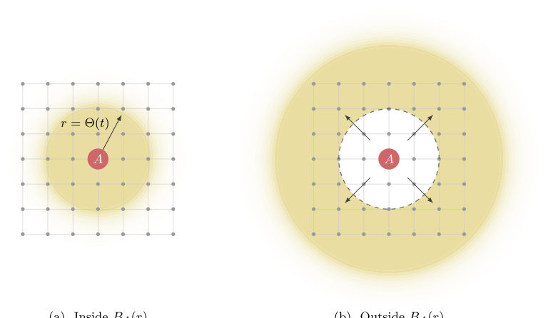
<figcaption class="paper-figure-caption"><b>Fig 1.</b> Figure 1: Splitting the contractivity of a local term OA. (a) Inside the ball BA(r) the truncated dynamics etLBA(r) equilibrates OA rapidly, contributing poly(|BA(r)|) · e−∆t · ∥OA∥; the radius grows linearly with time, but the exponential decay asymptotically beats the polynomial growth. (b) Outside BA(r) the dynamics is suppressed by the Lieb-Robinson bound, and is made small by the radius increasing with time. Neither contribution depends on the system size, so OA mixes after interacting with only a finite portion of L.</figcaption>
</figure>
<figure class="paper-figure-card">
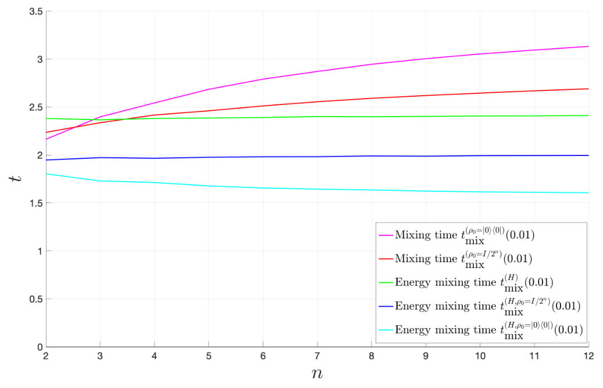
<figcaption class="paper-figure-caption"><b>Fig 2.</b> Figure 2: Comparing different mixing time notions for the 1D transverse-field Ising model with J = 0.5, h = 1, at β = 1.</figcaption>
</figure>
<figure class="paper-figure-card">
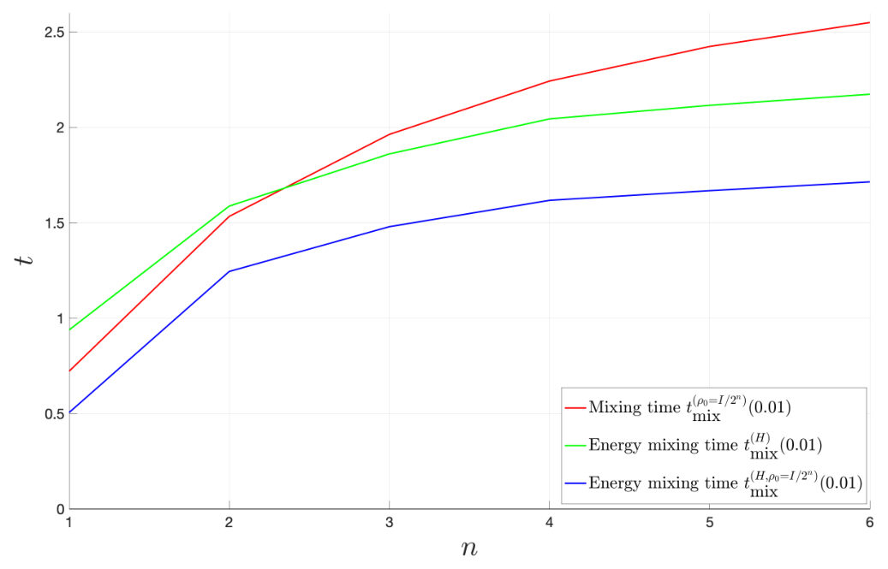
<figcaption class="paper-figure-caption"><b>Fig 3.</b> Figure 3: Comparing different mixing time notions for the spinful 1D Fermi-Hubbard model with U = 1, t = 1, at β = 1.</figcaption>
</figure>
<figure class="paper-figure-card">
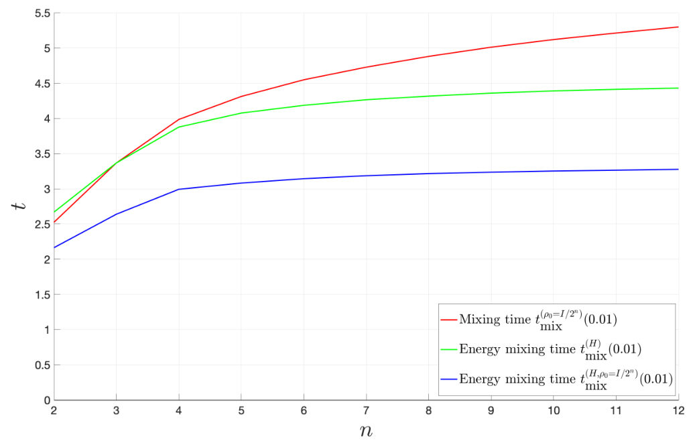
<figcaption class="paper-figure-caption"><b>Fig 4.</b> Figure 4: Comparing different mixing time notions for the spinless 1D Fermi-Hubbard model with U = 2, t = 1, at β = 1.</figcaption>
</figure>
<figure class="paper-figure-card">
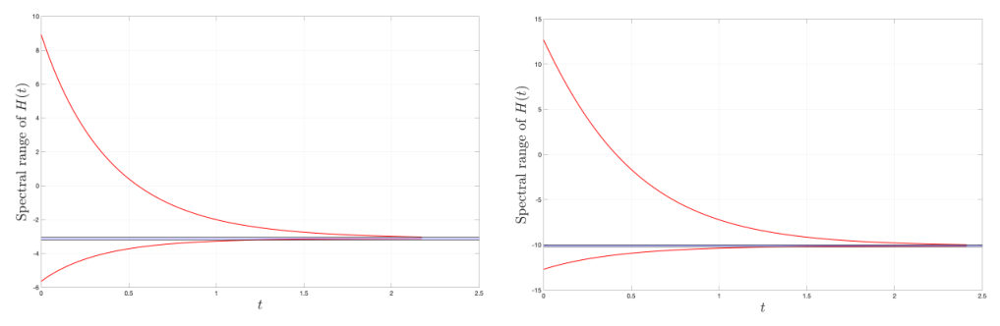
<figcaption class="paper-figure-caption"><b>Fig 5.</b> Figure 5: Contractivity of the spectral range of H(t) around its expectation value Tr(H · σ) in the steady state. The mixing time is defined by the whole spectrum being contained around the steady value within an error ϵ = 0.01 relative to the spectral norm of H.</figcaption>
</figure>
</div>

<p><strong>Summary.</strong> This paper introduces observable-specific mixing times for open quantum systems, proving that local observables equilibrate in a time independent of system size for rapidly mixing dynamics. This finding drastically reduces the required runtime for quantum algorithms like Gibbs samplers. It establishes a key theoretical separation between local and global convergence rates in quantum thermalization.</p>
<p><strong>Why it may be interesting.</strong> This work provides a crucial theoretical tool for quantum simulation, demonstrating that computational complexity can be dictated by local observables rather than the full state space, which is vital for simulating thermalization processes.</p>
<details>
<summary>Detailed structure</summary>
<p><strong>Main problem.</strong> The paper addresses whether full state convergence is necessary to accurately estimate physically relevant local observables in open quantum systems undergoing rapid dynamics.</p>
<p><strong>Main result.</strong> For quasi-local, rapidly mixing Lindbladians, observables that are sums of geometrically-local terms equilibrate in a time independent of system size, significantly improving algorithmic scaling compared to global state mixing.</p>
<p><strong>Method.</strong> The authors introduce and study observable-specific mixing times, contrasting them with the global trace distance, and employ scaling arguments combined with Lieb-Robinson bounds.</p>
<p><strong>Model / system.</strong> The study concerns open quantum systems governed by Markovian dynamics described by a Lindbladian. Applications include quantum Gibbs samplers and estimating local order parameters in lattice models.</p>
<p><strong>Key observables.</strong> Observable-specific mixing time $t(O)_{	ext{mix}}(\epsilon)$, local order parameters, and the Gibbs state energy.</p>
<p><strong>Important parameters / regimes.</strong> The mixing time $\epsilon$ (error tolerance), system size $n$, and the spatial dimension $D$.</p>
<p><strong>Assumptions / limitations.</strong> The Lindbladian must be quasi-local and rapidly mixing for the main results to hold.</p>
<p><strong>Figures summary.</strong> Figure 1 illustrates the separation of dynamics into local and non-local contributions, showing that the equilibration of local terms is independent of system size.</p>
<p><strong>Paper structure.</strong> The paper first defines observable-specific mixing times, proves the constant-time equilibration for local sums of observables, contrasts this with global state mixing, and then complements the quantum result with a classical algorithm analysis.</p>
</details>
<details>
<summary>Abstract</summary>
<p>Markovian open-system dynamics have widespread applications throughout quantum information science, including algorithmic state preparation. Their convergence is commonly quantified using the worst case global trace distance between the evolving and stationary states. However, this criterion can be unnecessarily stringent when only physically relevant observables are of interest. Here we introduce and study observable-specific mixing times. We prove that, for quasi-local, rapidly mixing Lindbladians, sums of geometrically local observables equilibrate in a time independent of system size, in contrast to the logarithmic dependence of global state mixing. This separation reduces the runtime of dissipative quantum algorithms, including quantum Gibbs samplers, for estimating quantities such as the Gibbs state energy and local order parameters, yielding an overall scaling that is linear in system size. Complementing this quantum result, we develop a quantum-inspired classical algorithm for estimating the same quantities. Its runtime is likewise linear in system size, but scaling exponentially in $\mathcal{O}\big(\log(1/ε)^D\big)$, where $D$ denotes the spatial dimension of the lattice. We further analyse non-interacting Lindbladians over qudits, fermions, and bosons, demonstrating that locality of observables is not always necessary for a qualitatively faster mixing. Small-scale simulations of quantum Gibbs samplers reveal no large hidden constants in our asymptotic analysis and show that the theoretical predictions closely capture the finite-size dynamics.</p>
</details>
<p><sub><a href="#top">↑ back to top</a></sub></p>

<p><a id="paper-2608.28440"></a></p>
<h3 id="from-quantum-reservoirs-to-quantum-extreme-learning-machines-through-a-nearest-neighbor-spin-chain-with-tunable-quantum-memory"><a href="http://arxiv.org/abs/2608.28440v1">From quantum reservoirs to quantum extreme learning machines through a nearest-neighbor spin chain with tunable quantum memory</a></h3>
<p><strong>Authors:</strong> Carlos Ramon-Escandell, Arnau Riera, Marcin Płodzień<br>
<strong>Type:</strong> theory · <strong>Category:</strong> disordered systems and neural networks · <strong>PDF:</strong> <a href="https://arxiv.org/pdf/2608.28440v1">https://arxiv.org/pdf/2608.28440v1</a><br>
<strong>Analysis basis:</strong> full PDF text, analyzed in chunks
<strong>Topic relevance:</strong> <code>analog quantum simulation</code> <strong>3/5</strong> · <code>Frenkel-Kontorova</code> <strong>1/5</strong> · <code>driven-dissipative phase transition</code> <strong>1/5</strong> · <code>methods for driven-dissipative</code> <strong>1/5</strong> · <code>non-equilibrium universality</code> <strong>1/5</strong> · <code>scars &amp; prethermalization</code> <strong>1/5</strong></p>
<div class="figure-strip-hint">↔ Scroll figures horizontally</div>
<div class="paper-figures-scroll">
<figure class="paper-figure-card">
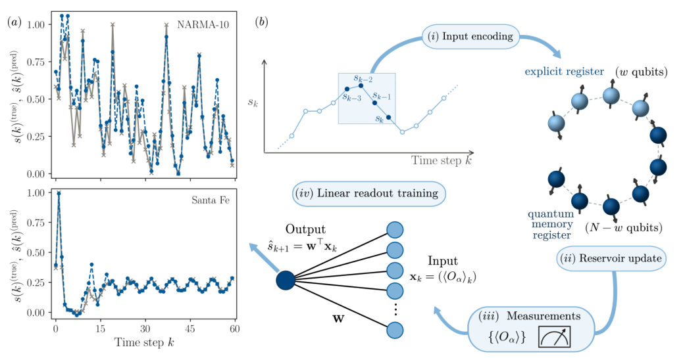
<figcaption class="paper-figure-caption"><b>Fig 1.</b> FIG. 1. Quantum Reservoir Computing with a tunable memory register. (a) Example of the reservoir prediction ˆs(k)(pred)</figcaption>
</figure>
<figure class="paper-figure-card">
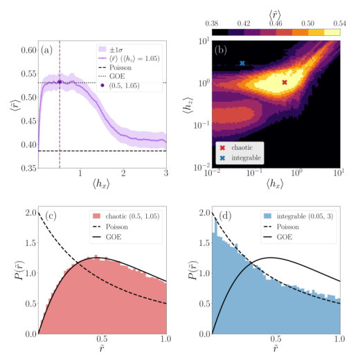
<figcaption class="paper-figure-caption"><b>Fig 2.</b> FIG. 2. Spectral characterization of the MFIM reservoir for N = 10 at coupling J = 1, with fields drawn from Gaussian distributions of width ϵ = 0.05 around their nominal values ⟨h•⟩and averaged over nr = 1000 realizations in (a, b) and nr = 200 in (c, d). (a) Average gap ratio ⟨˜r⟩versus the longi- tudinal field ⟨hx⟩at fixed ⟨hz⟩= 1.05, with the shaded band showing ±1σ. The dashed and dotted lines mark the Pois- son (0.386) and GOE (0.531) values, and the dot marks the chaotic point used in this work, (⟨hx⟩, ⟨hz⟩) = (0.5, 1.05). (b) Heatmap of ⟨˜r⟩over the field plane, with the chaotic (red) and integrable (blue) reference points marked. (c-d) Gap- ratio distributions P(˜r) at the chaotic...</figcaption>
</figure>
<figure class="paper-figure-card">
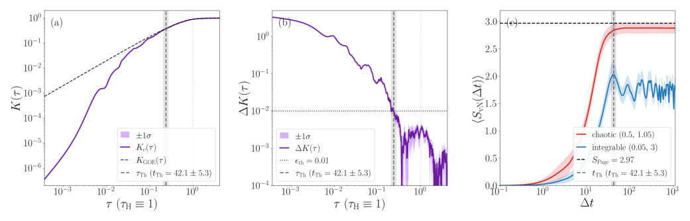
<figcaption class="paper-figure-caption"><b>Fig 3.</b> FIG. 3. Dynamical signatures of quantum chaos in the MFIM reservoir, at the chaotic point (hx, hz) = (0.5, 1.05) and, for comparison in (c), also at the integrable point (0.05, 3). (a) Connected spectral form factor (SFF) Kc(τ) as a function of the rescaled time τ = t/tH (solid), compared with the GOE prediction KGOE(τ) (dashed), averaged over nr = 2000 realizations with fields drawn uniformly from a window of half-width ϵdis = 0.15 around the chaotic point. (b) Deviation ∆K(τ) = | log10[Kc(τ)/KGOE(τ)]|, with the threshold ϵth = 0.01 (dotted horizontal line) whose crossing gives tTh = 42.1 ± 5.3 in physical units. (c) Half-chain von Neumann entropy ⟨SvN(t)⟩, averaged over 200 initial random...</figcaption>
</figure>
<figure class="paper-figure-card">
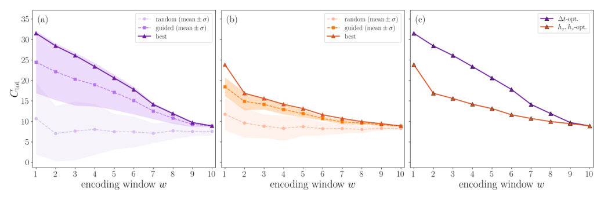
<figcaption class="paper-figure-caption"><b>Fig 4.</b> FIG. 4. Total short-term memory capacity Ctot = P50 d=1 C(d) of the N = 10 MFIM reservoir versus encoding window w, under the two strategies of Sec. II D, optimizing ∆t at the fixed chaotic point (hx, hz) = (0.5, 1.05) in (a) and (hx, hz) at fixed ∆t = 70 in (b). Light markers with band show the mean ±σ over the 50 random configurations, dark markers the 100 guided (TPE) trials, and the solid line the single best configuration. Panel (c) overlays the two best curves. All collapse to a common value at the QELM limit w →N.</figcaption>
</figure>
<figure class="paper-figure-card">
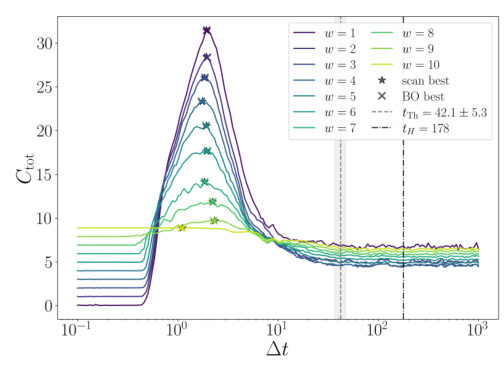
<figcaption class="paper-figure-caption"><b>Fig 5.</b> FIG. 5. Total memory capacity Ctot = P50 d=1 C(d) versus evolution time ∆t at the chaotic point (hx, hz) = (0.5, 1.05), scanned for each window w = 1 to 10. For every window the maximum of the scan (star) coincides with the BO optimum (cross). The capacity peaks at intermediate ∆t, well before the Thouless time tTh = 42.1 ± 5.3 (dashed) and the Heisen- berg time tH = 178 (dash-dotted), and settles onto a low plateau at long ∆t. The peak height decreases monotonically with w, from w = 1 to the QELM limit w = N.</figcaption>
</figure>
</div>

<p><strong>Summary.</strong> This paper unifies Quantum Reservoir Computing and Quantum Extreme-Learning Machines by showing they are limits of a single quantum architecture whose memory capacity is controlled by an 'input-encoding length.' Using a tunable spin chain model, the authors demonstrate that optimal performance for temporal tasks requires operating in the chaotic regime, confirming that the system's dynamics, rather than just its connectivity, is key for quantum memory processing.</p>
<p><strong>Why it may be interesting.</strong> The work directly connects concepts from quantum computation (reservoir computing) with the physics of many-body dynamics (chaos, spectral statistics) in a tunable spin chain model, providing insights into how memory capacity emerges from physical Hamiltonians.</p>
<details>
<summary>Detailed structure</summary>
<p><strong>Main problem.</strong> The paper demonstrates that Quantum Reservoir Computing (QRC) and Quantum Extreme-Learning Machines (QELM) are not separate paradigms but rather two limits of a single underlying quantum architecture.</p>
<p><strong>Main result.</strong> The optimal performance for temporal tasks is achieved at the edge of chaos, suggesting that the dynamical regime, rather than the connectivity structure, dictates the necessary quantum processing capability.</p>
<p><strong>Method.</strong> The authors analyze the system's dynamics by varying the 'input-encoding length,' which controls the balance between explicit (recent) and recurrent (historical) quantum memory.</p>
<p><strong>Model / system.</strong> The physical model employed is a nearest-neighbor spin chain governed by the Mixed-Field Ising Model (MFIM) Hamiltonian, which is tunable between integrable and chaotic regimes.</p>
<p><strong>Key observables.</strong> Gap ratio ($\langle	ilde{r}
angle$), Thouless Time ($t_{Th}$), Spectral Form Factor (SFF), and task-specific scores (e.g., for NARMA or Mackey-Glass).</p>
<p><strong>Important parameters / regimes.</strong> Input-encoding length (qubits overwritten), Hamiltonian fields ($h_x, h_z$), and evolution time ($\Delta t$).</p>
<p><strong>Assumptions / limitations.</strong> The analysis relies on the 'erase-and-write' non-unitary map for input encoding, and the comparison between the linear chain and the densely connected model.</p>
<p><strong>Figures summary.</strong> Figures illustrate the QRC pipeline, the comparison of spectral statistics (gap ratios) across different regimes, and the dependence of optimal time scales ($\Delta t_{opt}$) on the encoding window size ($w$).</p>
<p><strong>Paper structure.</strong> The paper first establishes the theoretical link between QRC and QELM. It then characterizes the system's spectral and dynamical properties (using gap ratios and SFF) across tunable Hamiltonian regimes. Finally, it applies this framework to benchmark the model's performance on various time-series forecasting tasks using optimized parameters.</p>
</details>
<details>
<summary>Abstract</summary>
<p>Quantum Reservoir Computing (QRC) processes temporal data by retaining a memory of past inputs in the recurrent state of a quantum system, whereas a Quantum Extreme-Learning Machine (QELM) discards that memory, resetting the system at every step so that only the most recent input shapes the response. The two are usually treated as separate computational paradigms. We show that they are the two limits of a single architecture, connected by the input-encoding length, that is, the number of qubits overwritten with fresh data at each step. When a single qubit is re-encoded the system operates as a standard QRC, when the whole register is re-encoded it operates as a QELM, and intermediate lengths interpolate between them. The overwritten qubits hold the recent past in an explicit register, while the remaining qubits are never reset and carry older inputs forward in their evolving quantum state, so the encoding length redistributes memory between explicit and recurrent storage at fixed system size. Tuning the reservoir Hamiltonian and the evolution time with Bayesian optimization at each encoding length, we find that recurrent quantum memory is essential when a task must reach far into the past, and dispensable when the relevant history is short, where the memoryless reset limit already suffices. For every task the best reservoirs operate at the edge of chaos, where they perform as well as a densely connected reservoir with random all-to-all couplings of the same size, indicating that what temporal processing requires is the dynamical regime rather than the connectivity.</p>
</details>
<p><sub><a href="#top">↑ back to top</a></sub></p>

<p><a id="paper-2608.27568"></a></p>
<h3 id="quantifying-the-dual-isotope-advantage-for-ytterbium-array-surface-codes-using-realistic-noise-models"><a href="http://arxiv.org/abs/2608.27568v1">Quantifying the Dual-isotope Advantage for Ytterbium-array Surface Codes using Realistic Noise Models</a></h3>
<p><strong>Authors:</strong> Fumiyoshi Kobayashi, Toshi Kusano, Nicholas Fazio, Yuma Nakamura<br>
<strong>Type:</strong> theory · <strong>Category:</strong> quantum information and computing · <strong>PDF:</strong> <a href="https://arxiv.org/pdf/2608.27568v1">https://arxiv.org/pdf/2608.27568v1</a><br>
<strong>Analysis basis:</strong> full PDF text, analyzed in chunks
<strong>Topic relevance:</strong> <code>Rydberg arrays</code> <strong>3/5</strong> · <code>QC/QI experiment</code> <strong>2/5</strong> · <code>analog quantum simulation</code> <strong>1/5</strong> · <code>correlated / nonlocal dissipation</code> <strong>1/5</strong> · <code>quantum measurements</code> <strong>1/5</strong></p>
<div class="figure-strip-hint">↔ Scroll figures horizontally</div>
<div class="paper-figures-scroll">
<figure class="paper-figure-card">
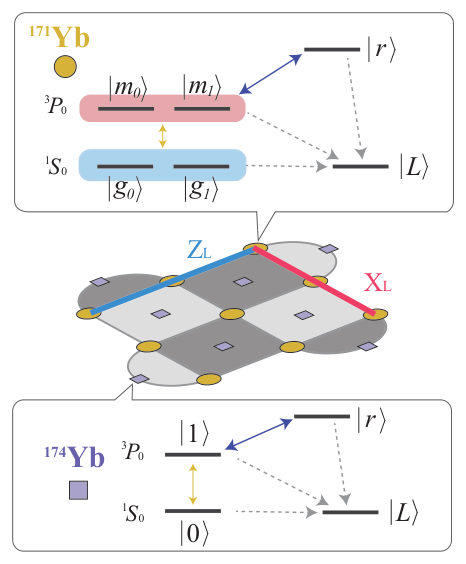
<figcaption class="paper-figure-caption"><b>Fig 1.</b> Figure 1: Schematic of the surface code layout in a dual- isotope Yb system. Data qubits (yellow circle) and an- cilla qubits (purple square) are encoded in 171Yb and 174Yb, respectively. For the 171Yb data qubits, we evaluate two encoding schemes: the 1S0 ground-state encoding (g-qubit: |g•⟩, shaded in blue) and the 3P0 metastable-state encoding (m-qubit: |m•⟩, shaded in red). The 174Yb ancilla qubits are encoded as optical clock qubits, with |0⟩and |1⟩repre- senting the ground and metastable states. Rydberg gates are mediated by the Rydberg blockade effect via a high-lying Ry- dberg state |r⟩. All computational states are susceptible to loss, depicted as grey dashed arrows; the state...</figcaption>
</figure>
<figure class="paper-figure-card">
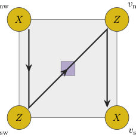
<figcaption class="paper-figure-caption"><b>Fig 2.</b> Figure 2: Standard syndrome extraction circuits for the sur- face code. CZ gates are a native two-qubit gate in neutral- atom quantum devices utilising Rydberg blockade. Panels (a) and (b) show the Z- and X-stabiliser check circuits of the rotated surface code, respectively. Panel (c) shows a sin- gle face of the XZZX surface code, where each data qubit (yellow circle) on the vertices vnw, vne, vsw and vse is acted on by the Pauli operator denoted inside the circle and the N-shaped arrow denotes the order in which the CZ gates are applied between each data qubit and the ancilla qubit at the centre of a face. Since every face of the XZZX code carries a generator of the same form, the same...</figcaption>
</figure>
<figure class="paper-figure-card">
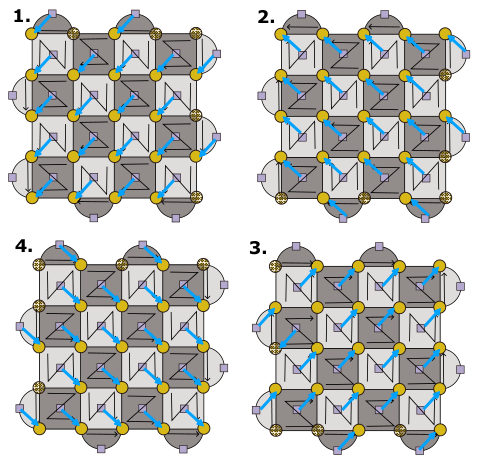
<figcaption class="paper-figure-caption"><b>Fig 3.</b> Figure 4: Dynamical-ZN ordering for SWAP SE. The CZ gate order (black N/Z-shape arrows) differs between X-type and Z-type stabilisers [91]. The blue arrow represents the re- placement of data qubits by the ancilla qubit. The replaced qubit changes at each stabiliser round to maximise the num- ber of data qubits refreshed as ancilla qubits via SWAP op- erations. The cross-hatched data qubits are not refreshed in each respective round.</figcaption>
</figure>
<figure class="paper-figure-card">
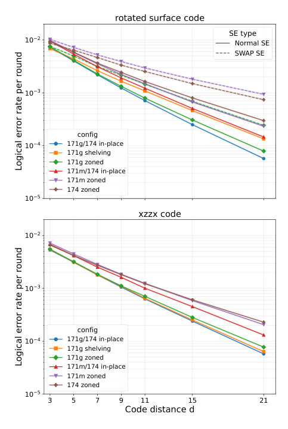
<figcaption class="paper-figure-caption"><b>Fig 4.</b> Figure 5: The dependence of the LER per round of the ro- tated and XZZX surface codes at code distance d for differ- ent configurations of isotope, encoding and SE measurement method. Colour and marker delineate the isotope combi- nation and encoding, and the line style represents the SE method. The dual-isotope configuration using normal SE with in-place measurement (blue solid line with circle marker) achieves the lowest LER among all the configurations. The SWAP SE cases (dashed line) achieve similar or higher LER compared to normal SE for all configurations on the rotated surface code. Moreover, comparing the two codes, the XZZX code achieves a LER comparable to or lower than that of...</figcaption>
</figure>
<figure class="paper-figure-card">

<figcaption class="paper-figure-caption"><b>Fig 5.</b> Figure 6: Error budgets for (171Yb-g, 174Yb), 171Yb- g single-isotope with zoned measurement, 171Yb-g single- isotope with shelving, and 174Yb clock qubits with zoned measurement. This plot shows the division of the error con- tribution of each pi ∈P to Λ−1 as Ci. The main contri- butions are the decay errors from the Rydberg state during the application of two-qubit gates. The next most signifi- cant contributions are from two-qubit depolarising noise on two-qubit gates and metastable-to-ground decay. Small con- tributions and stray error that cannot be captured by the linear approximation are attributed to “others”.</figcaption>
</figure>
</div>

<p><strong>Summary.</strong> This paper analyzes the performance of neutral-atom quantum computers for fault-tolerant quantum computation using Ytterbium isotopes. By developing a realistic noise model, the authors demonstrate that a dual-isotope architecture significantly outperforms single-isotope methods due to efficient in-place measurement. The study provides critical error-budget analysis, identifying Rydberg-state decay as the primary bottleneck for improving future quantum processors.</p>
<p><strong>Why it may be interesting.</strong> This work directly tackles the engineering challenges of scaling quantum computation by providing quantitative metrics on architectural advantages (dual-isotope vs. single-isotope) and identifying the dominant physical error sources that must be addressed experimentally.</p>
<details>
<summary>Detailed structure</summary>
<p><strong>Main problem.</strong> To quantify the advantage of using a dual-isotope Ytterbium architecture for implementing surface codes in fault-tolerant quantum computation (FTQC) compared to single-isotope schemes.</p>
<p><strong>Main result.</strong> The dual-isotope architecture with in-place measurement achieves the lowest logical error rates, and the analysis pinpoints Rydberg-state decay as the dominant error source, contributing 74-80% of the logical error rate.</p>
<p><strong>Method.</strong> The authors developed an experimentally motivated Clifford-compatible noise model using generalized Pauli twirling and simulated surface codes (rotated and XZZX) using an open-source Python library, DualYbSim.</p>
<p><strong>Model / system.</strong> The system uses neutral-atom quantum computers with dual-isotope Yb arrays ($^{171}	ext{Yb}$ and $^{174}	ext{Yb}$). Qubits are encoded in different ground/metastable states, and gates rely on the Rydberg blockade effect. The noise model accounts for various decay and measurement channels.</p>
<p><strong>Key observables.</strong> Logical Error Rates (LER) for surface codes, and the contribution of specific noise channels (e.g., Rydberg-state decay) to the total error budget.</p>
<p><strong>Important parameters / regimes.</strong> The ratio of logical error rates between dual-isotope vs. single-isotope schemes; the decay rate of the Rydberg state.</p>
<p><strong>Assumptions / limitations.</strong> The noise model simplifies complex sublevel structures, and the analysis ignores transportation noise associated with qubit replenishment.</p>
<p><strong>Figures summary.</strong> Figure 1 schematically shows the dual-isotope layout for surface code memories. Figure 2 illustrates the syndrome extraction circuits for the surface code and the XZZX stabilizer check.</p>
<p><strong>Paper structure.</strong> The paper introduces the challenge of noise in neutral-atom FTQC, details the dual-isotope architecture and its noise model, simulates performance on various surface codes, and concludes with an error-budget analysis identifying key physical limitations.</p>
</details>
<details>
<summary>Abstract</summary>
<p>Neutral-atom quantum computers are a promising platform for fault-tolerant quantum computation, but logical performance depends on systemic realistic noise factors during syndrome extraction. In dual-isotope Yb arrays, the roles of data and ancilla qubits are separated spectrally, allowing ancilla qubits to be measured in place without additional transport or shelving operations. Here we quantify the advantage of a dual-isotope Yb architecture for surface code memories. We develop an experimentally motivated Clifford-compatible noise model for dual-isotope 171Yb-174Yb systems using generalised Pauli twirling and implement it as a wrapper for Stim called DualYbSim, which has been packaged as an open source Python library. Simulations of rotated and XZZX surface codes show that a dual-isotope architecture with in-place measurement achieves the lowest logical error rates among the architectures considered, outperforming single-isotope schemes based on shelving or zoned measurement. Our error-budget analysis also identifies Rydberg-state decay as the dominant limitation, contributing to 74-80% of the logical error rate scaling, highlighting concrete experimental targets for improving FTQC performance.</p>
</details>
<p><sub><a href="#top">↑ back to top</a></sub></p>

<p><a id="paper-2608.27977"></a></p>
<h3 id="compact-variational-neural-networks-for-spectral-inference-from-a-single-nonlinear-2d-perovskite-photodetector"><a href="http://arxiv.org/abs/2608.27977v1">Compact Variational Neural Networks for Spectral Inference from a Single Nonlinear 2D Perovskite Photodetector</a></h3>
<p><strong>Authors:</strong> Karl Jonas Riisnaes, Ned Thaddeus Taylor, Hoi Tung Lam, Rosanna Mastria, Francesco Saverio Difeo, Monica Felicia Craciun, Saverio Russo<br>
<strong>Type:</strong> both · <strong>Category:</strong> disordered systems and neural networks · <strong>PDF:</strong> <a href="https://arxiv.org/pdf/2608.27977v1">https://arxiv.org/pdf/2608.27977v1</a><br>
<strong>Analysis basis:</strong> full PDF text, analyzed in chunks
<strong>Topic relevance:</strong> <code>methods for driven-dissipative</code> <strong>3/5</strong> · <code>Keldysh / 2PI / non-Gaussian methods</code> <strong>2/5</strong> · <code>quantum measurements</code> <strong>2/5</strong></p>
<div class="figure-strip-hint">↔ Scroll figures horizontally</div>
<div class="paper-figures-scroll">
<figure class="paper-figure-card">

<figcaption class="paper-figure-caption"><b>Fig 1.</b> Figure 1: Optoelectronic response of the 2D F-PEAI photodetector.</figcaption>
</figure>
<figure class="paper-figure-card">

<figcaption class="paper-figure-caption"><b>Fig 2.</b> Figure 2: Structure-aware variational encoder-decoder for spectral</figcaption>
</figure>
<figure class="paper-figure-card">

<figcaption class="paper-figure-caption"><b>Fig 3.</b> Figure 3: Predictive performance of the spectral reconstruction model.</figcaption>
</figure>
<figure class="paper-figure-card">

<figcaption class="paper-figure-caption"><b>Fig 4.</b> Figure 4: Representative spectral reconstructions from the held-out test set.</figcaption>
</figure>
<figure class="paper-figure-card">

<figcaption class="paper-figure-caption"><b>Fig 5.</b> Figure 5: Voltage-resolved encoding of wavelength information in the nonlinear</figcaption>
</figure>
</div>

<p><strong>Summary.</strong> This paper proposes using the nonlinear electrical response of a single 2D perovskite photodetector to perform full spectral analysis, bypassing the need for traditional dispersive optics. A variational neural network is trained to invert the complex current-voltage curves, successfully reconstructing both the incident wavelength and irradiance with high accuracy. This establishes nonlinear material dynamics as a powerful computational resource for compact quantum sensing.</p>
<p><strong>Why it may be interesting.</strong> This work exemplifies a strong hardware-algorithm co-design approach, using the complex, nonlinear physics of a solid-state material (perovskite) as the physical encoding mechanism for spectral data, which is highly relevant to developing compact quantum sensing or characterization tools.</p>
<details>
<summary>Detailed structure</summary>
<p><strong>Main problem.</strong> Conventional spectroscopy is limited by the need for bulky dispersive optics or large detector arrays. The paper addresses this by proposing a method where the nonlinear dynamics of a single photodetector encode the incident spectrum.</p>
<p><strong>Main result.</strong> The developed model successfully reconstructs incident wavelength ($R^2=0.958$) and irradiance ($R^2=0.987$) using only the photodetector's current-voltage signatures, demonstrating a path toward compact spectroscopic systems.</p>
<p><strong>Method.</strong> A compact variational encoder-decoder neural network is trained to map the history-dependent, nonlinear current-voltage sweeps onto continuous spectral parameters (wavelength and irradiance).</p>
<p><strong>Model / system.</strong> The physical system is a planar fluorinated phenethylammonium lead iodide (F-PEAI) 2D perovskite photodetector. The model leverages the photodetector's complex, nonlinear response to encode spectral information.</p>
<p><strong>Key observables.</strong> Reconstructed wavelength ($\lambda$), log-normalised irradiance ($I$), and the measured bias-dependent current-voltage ($I-V$) signatures.</p>
<p><strong>Important parameters / regimes.</strong> The model uses a truncated Legendre-polynomial basis for projection; performance is quantified by $R^2$ and MAE.</p>
<p><strong>Assumptions / limitations.</strong> The core assumption is that the complex, multi-physics nonlinear material dynamics (photocarrier generation, trapping, transport) can be accurately modeled and inverted using the variational autoencoder structure.</p>
<p><strong>Figures summary.</strong> Figures illustrate the device setup, the VAE workflow (including Legendre decomposition), and show representative photocurrent-voltage curves and spectral responsivity measurements.</p>
<p><strong>Paper structure.</strong> The paper introduces the problem of spectral measurement limitations, details the F-PEAI device physics, presents the variational neural network architecture (encoder/decoder), and validates the model's performance through quantitative reconstruction metrics and ablation studies.</p>
</details>
<details>
<summary>Abstract</summary>
<p>Spectroscopy conventionally separates optical frequencies before detection, imposing persistent constraints on footprint, complexity and scalability. Here we establish an alternative paradigm in which the nonlinear optoelectronic dynamics of a single two-dimensional perovskite photodetector physically encode the incident optical field and machine learning performs the inverse spectral reconstruction. Using a planar fluorinated phenethylammonium lead iodide (F-PEAI) photodetector, we exploit wavelength- and irradiance-dependent current-voltage signatures arising from the coupled effects of photocarrier generation, trapping, interfacial transport and field-dependent carrier dynamics. A compact variational encoder-decoder preserves the functional and history-dependent structure of these responses by independently projecting forward and reverse voltage sweeps onto a truncated Legendre-polynomial basis before mapping them through a probabilistic latent representation to continuous spectral parameters. Trained on fewer than 400 experimental voltage sweeps, the model generalises to excitation wavelengths excluded from training, reconstructing wavelength with $R^2=0.958$ and a mean absolute error of 8.1 nm, while recovering log-normalised irradiance with $R^2=0.987$. Voltage-resolved analysis further reveals that wavelength and irradiance are encoded differently across the nonlinear device response, with distinct bias regions carrying complementary optical information. These results establish nonlinear material and interface dynamics as a computational resource for spectroscopy and point towards hardware-algorithm co-design in which materials, interfaces and inference architectures are engineered jointly to maximise information content, enabling compact spectroscopic systems without dispersive optics or detector arrays.</p>
</details>
<p><sub><a href="#top">↑ back to top</a></sub></p>

<p><a id="paper-2608.28463"></a></p>
<h3 id="fabrication-free-assessment-of-microwave-losses-in-germanium-based-dielectrics-and-superconductors"><a href="http://arxiv.org/abs/2608.28463v1">Fabrication-free assessment of microwave losses in germanium-based dielectrics and superconductors</a></h3>
<p><strong>Authors:</strong> Haoran Lu, Kushagra Aggarwal, Xiangqin Wang, Pauline Drexler, Daniel Tong, Maciej W. Olszewski, Anand Ithepalli, Lingda Kong, Debdeep Jena, Peter L. McMahon, David A. Muller, Dominique Bougeard, Valla Fatemi<br>
<strong>Type:</strong> experiment · <strong>Category:</strong> other · <strong>PDF:</strong> <a href="https://arxiv.org/pdf/2608.28463v1">https://arxiv.org/pdf/2608.28463v1</a><br>
<strong>Analysis basis:</strong> full PDF text, analyzed in chunks
<strong>Topic relevance:</strong> <code>QC/QI experiment</code> <strong>3/5</strong> · <code>quantum measurements</code> <strong>2/5</strong> · <code>correlated / nonlocal dissipation</code> <strong>1/5</strong> · <code>driven-dissipative phase transition</code> <strong>1/5</strong></p>
<div class="figure-strip-hint">↔ Scroll figures horizontally</div>
<div class="paper-figures-scroll">
<figure class="paper-figure-card">

<figcaption class="paper-figure-caption"><b>Fig 1.</b> FIG. 1. Sensing scheme. (a) Schematic of the flip-chip- based sensing scheme. The sensor chip, with microwave res- onators and 4 µm SU-8 pillars, is bonded to the package using Al wire. Target chips are placed above the sensor chip, and tight contact is ensured by four pogo pins that press the tar- get material from the top. (b) Dielectric material loss sensing scheme and EM field distribution. (c) Superconducting thin film loss sensing scheme with EM field and current distribu- tion. (d) Participation ratio of the dielectric target material prmaterial as a function of the height of the SU-8 pillar, with ϵr = 16.2 of the target dielectric material. (e) Participa- tion ratio of target...</figcaption>
</figure>
<figure class="paper-figure-card">

<figcaption class="paper-figure-caption"><b>Fig 2.</b> FIG. 2. Dielectric material loss. (a) Box plots of low power (⟨n⟩&lt; 10) intrinsic loss δLP (dots) and high power (⟨n⟩&gt; 106) intrinsic loss δHP (stars) for dielectric materials measured by the flip-chip-based sensor. The dashed grey line indicates the median loss for the “vacuum” case, which serves as the reference loss. (b) Inferred low power material loss δLP material extracted from the measured sensor resonator loss. The dashed blue line is set at 180 × 10−6 for visual reference. (c) Measured loss of sensing resonator δ as a function of photon number with Ge (orange) and HF-treated Ge (blue) as the target material. (d) Measured loss of sensing resonator δ as a function of photon number...</figcaption>
</figure>
<figure class="paper-figure-card">

<figcaption class="paper-figure-caption"><b>Fig 3.</b> Fig. 2(c,d) show the power dependence of the mi- crowave loss of Ge, HF-treated Ge, QW etched, and QW HF-treated. We note that the power dependence of Ge is relatively flat compared to “QW etched”, which does not saturate at ⟨n⟩≈1. This might be due to a rela- tively low concentration of two-level systems (TLSs) in- trinsically present in the epi-ready commercial Ge sub- strate, whereas the strain-relaxing composition grading of SiGe, different interfaces within the heterostructure, and/or the etching used to prepare the SiGe virtual layer may result in a higher concentration of TLSs. We remark</figcaption>
</figure>
<figure class="paper-figure-card">

<figcaption class="paper-figure-caption"><b>Fig 4.</b> FIG. 3. Scanning transmission electron microscopy (STEM) images of PtSiGe and Nb-coated PtSiGe (Nb- PtSiGe). Low-magnification STEM ADF images of the (a) PtSiGe and (b) Nb-PtSiGe films. Both films were kept under ambient conditions for 2 months prior to STEM imaging. The scale bar is 100 nm. (c), (d) Reference ADF images and EELS maps of the O-K, Ge-L2,3, Si-K, Pt-M4,5, Nb-L3 edges for the PtSiGe and Nb-PtSiGe samples, respectively. The scale bar is 25 nm. (e) Resistance as a function of temperature for PtSiGe and Nb-PtSiGe films near the superconductor transition temperature. (f) Residual resistivity ratio for PtSiGe and Nb-PtSiGe.</figcaption>
</figure>
<figure class="paper-figure-card">

<figcaption class="paper-figure-caption"><b>Fig 5.</b> FIG. 4. Superconducting thin film loss. (a) Box plot of low power (⟨n⟩&lt; 10) loss δLP (dots) and high power (⟨n⟩&gt; 106) loss δHP (star) for superconducting thin films measured by the flip-chip-based sensor. The PtSiGe and Nb-coated PtSiGe (Nb-PtSiGe) samples are remeasured after 2 months of aging. (b) Temperature dependence of high power δHP for PtSiGe and Nb-PtSiGe. Solid points indicate the measured values, and solid lines represent the Mattis-Bardeen fits. We extract RF critical temperatures of T RF C = 0.31 K for PtSiGe and T RF C = 0.32 K for Nb-PtSiGe, assuming ∆0 = 1.764kBTC where ∆0 is the superconducting gap.</figcaption>
</figure>
</div>

<p><strong>Summary.</strong> This work presents a novel, fabrication-free microwave sensing technique using a flip-chip setup to quantify microwave losses in materials for quantum devices. The authors successfully applied this to measure losses in Ge/SiGe dielectrics and superconducting films like PtSiGe. This method provides critical material constraints and design guidance for building high-quality superconducting quantum circuits.</p>
<p><strong>Why it may be interesting.</strong> The development of a non-destructive, rapid characterization tool for superconducting and dielectric losses is crucial for advancing superconducting quantum circuit design, bridging materials science and quantum engineering.</p>
<details>
<summary>Detailed structure</summary>
<p><strong>Main problem.</strong> To develop a fabrication-free method to accurately measure effective microwave losses in novel materials intended for quantum technologies, specifically dielectrics and superconductors.</p>
<p><strong>Main result.</strong> The technique successfully quantified losses in Ge/SiGe heterostructures and showed that coating PtSiGe with Nb significantly reduced microwave loss and enhanced the critical temperature.</p>
<p><strong>Method.</strong> A flip-chip-based sensing scheme is employed where a microwave resonator placed over the target material measures the material's participation ratio for both dielectric and superconducting losses.</p>
<p><strong>Model / system.</strong> The platform involves a microwave resonator sensor chip placed on top of the material under test (e.g., Ge/SiGe or PtSiGe) via pogo pins, allowing for non-destructive, in-situ loss measurement.</p>
<p><strong>Key observables.</strong> Participation ratio (pr_material, pr_MA), microwave loss tangents ($\delta$), and the temperature dependence of microwave loss.</p>
<p><strong>Important parameters / regimes.</strong> Low-photon and high-photon microwave regimes, strain engineering parameters in Ge/SiGe, and the superconducting critical temperature ($T_c$).</p>
<p><strong>Assumptions / limitations.</strong> The method assumes that the measured loss is dominated by the target material's intrinsic properties and that the sensing setup accurately isolates the material's contribution.</p>
<p><strong>Figures summary.</strong> Figures illustrate the flip-chip sensing schematics for both dielectric and superconducting loss measurement, showing how participation ratios are calculated and how material losses vary with geometry.</p>
<p><strong>Paper structure.</strong> The paper introduces the sensing scheme, applies it to characterize dielectric losses in Ge/SiGe, then extends the method to measure superconducting losses in PtSiGe, concluding with design guidance and material constraints.</p>
</details>
<details>
<summary>Abstract</summary>
<p>We present a flip-chip-based sensing scheme to measure effective microwave losses associated with target materials for quantum technologies, without requiring any device fabrication on the material under test. Using this approach, we quantify the microwave losses of a strain-engineered Ge/SiGe quantum well heterostructure and investigate losses arising from its Ge substrate and intermediate layers. The quality factors of the fabricated microwave resonators agree with the losses of dielectric materials independently extracted from flip-chip sensing measurements. We further study the superconductor platinum silicon germanide (PtSiGe) prepared by thermal reaction with a deposited Pt film, finding high microwave losses that limit the suitability of the films studied here as the sole superconductor for high-quality resonator applications. By coating Pt with Nb prior to the reaction, we observe a substantial reduction in microwave loss and a nearly three-fold enhancement of the transport critical temperature. The temperature dependence of the microwave loss is consistent with gap inhomogeneity in both superconducting films. These results identify constraints on material choices, provide design guidance for microwave circuits on planar Ge heterostructures, and demonstrate a fast-turnaround testing method for new materials for superconducting quantum circuits.</p>
</details>
<p><sub><a href="#top">↑ back to top</a></sub></p>

<p><a id="paper-2608.28583"></a></p>
<h3 id="layer-controlled-intermolecular-coupling-and-many-body-effects-in-cmath247math-films"><a href="http://arxiv.org/abs/2608.28583v1">Layer-Controlled Intermolecular Coupling and Many-Body Effects in C$_{60}$ Films</a></h3>
<p><strong>Authors:</strong> Hai-Lan Luo, Weitang Li, Luca Moreschini, Jonathan Denlinger, Zhigang Shuai, Claudia Ojeda-Aristizabal, Alessandra Lanzara<br>
<strong>Type:</strong> both · <strong>Category:</strong> strongly correlated electrons · <strong>PDF:</strong> <a href="https://arxiv.org/pdf/2608.28583v1">https://arxiv.org/pdf/2608.28583v1</a><br>
<strong>Analysis basis:</strong> full PDF text, analyzed in chunks
<strong>Topic relevance:</strong> <code>analog quantum simulation</code> <strong>3/5</strong> · <code>Keldysh / 2PI / non-Gaussian methods</code> <strong>2/5</strong> · <code>methods for driven-dissipative</code> <strong>2/5</strong></p>
<div class="figure-strip-hint">↔ Scroll figures horizontally</div>
<div class="paper-figures-scroll">
<figure class="paper-figure-card">

<figcaption class="paper-figure-caption"><b>Fig 1.</b> FIG. 1. Thickness-dependent electronic structures of C60 films on a Bi2Se3 substrate. a-d, ARPES band structures of C60 films with thicknesses of 1 ML (a), 2 ML (b), 5 ML (c), and 22 ML (d) C60, measured along the MB ′-Γ-MB high-symmetry direction. Bands originating from the Bi2Se3 substrate are indicated by arrows in (a,b). e-h, Second-derivative images with respect to energy, derived from (a)-(d). The Brillouin zones of C60 and Bi2Se3 are outlined in yellow and red, respectively, in the inset of (e). i, EDCs integrated over the full MB ′-Γ-MB momentum range for all four thicknesses. The colored bars on the right indicate the centroid energy of each band manifold. j, Thickness dependence...</figcaption>
</figure>
<figure class="paper-figure-card">

<figcaption class="paper-figure-caption"><b>Fig 2.</b> FIG. 2. Thickness-dependent band dispersion and effective mass of HOMO band. a-d, Second-derivative ARPES spectra of the HOMO band along the M′-Γ-M high-symmetry direction for C60 films with thicknesses of 1 ML (a), 2 ML (b), 5 ML (c), and 22 ML (d). Blue dots indicate extracted peak positions of the dominant HOMO-derived dispersive spectral envelope, and black curves represent fits to these features. e, Fitted dispersions for all thicknesses overlaid for comparison. Blue curves show parabolic fits around the band top at M and the band bottom at Γ for the 22 ML film. The magenta arrow indicates the HOMO bandwidth (W ) of the dominant HOMO-derived dispersive spectral envelope, defined as the...</figcaption>
</figure>
<figure class="paper-figure-card">

<figcaption class="paper-figure-caption"><b>Fig 3.</b> FIG. 3. Thickness-dependent gap-like and sub-band features. a-c, Raw ARPES intensity maps of the HOMO band dispersion for 1 ML (a), 5 ML (b), and 22 ML (c) C60 films. The Λ point denotes the midpoint between Γ and M. The inset in (b) shows the second-derivative image, highlighting the sub-band feature in the 5 ML film; the corresponding raw-intensity evidence is provided in Supplementary Fig. S3. d-f, EDCs at the Λ point for C60 films with thicknesses of 1 ML (d), 5 ML (e), and 22 ML (f), showing gap-like structures. Spectra are fitted with two Gaussian components, as shown by gray dashed curves. g-i, EDCs at the M point for C60 films with thicknesses of 1 ML (g), 5 ML (h), and 22 ML (i). A...</figcaption>
</figure>
<figure class="paper-figure-card">

<figcaption class="paper-figure-caption"><b>Fig 4.</b> Figure 4b shows the simulated spectral function in the presence of electron-phonon interactions. The Hg(7) and Hg(8) modes are included with equal coupling strengths, corresponding to a reorganization energy of 20 meV (see Methods). The resulting spectrum exhibits a gap (∆A) at k / / = π/2, but no sub-band feature near π, as confirmed by the corresponding EDCs obtained at π/2 (Fig. 4e) and π (Fig. 4h). This intermediate-coupling regime re- produces the partial spectral renormalization observed experimentally, characterized by the presence of a gap without a well-defined sub-band. In particular, it cap- tures the behavior of the thicker (22ML) film, where spectral reconstruction is present...</figcaption>
</figure>
<figure class="paper-figure-card">

<figcaption class="paper-figure-caption"><b>Fig 5.</b> FIG. 4. Simulated spectral functions with varying electron-phonon coupling strength. a-c, Simulated single- particle spectral functions of the HOMO band based on a Holstein model with coupling to the Hg(7) (1443 cm−1) and Hg(8) (1607 cm−1) intramolecular phonon modes. The mode-resolved reorganization energy (g2 mωm) for each of these two modes is set to 0 meV in (a), 20 meV in (b), and 30 meV in (c), corresponding to the no-coupling, intermediate-coupling, and stronger- coupling cases, respectively. Arrows indicate gap-like features and sub-band formation. d-f, Corresponding EDCs at k / / = π/2 for the three electron-phonon coupling strengths, showing the evolution from a single peak to a...</figcaption>
</figure>
</div>

<p><strong>Summary.</strong> This work investigates how controlling the thickness of C60 molecular films tunes their electronic properties by manipulating intermolecular coupling and electron-phonon interactions. Using ARPES and Holstein model simulations, the authors demonstrate a non-monotonic evolution, identifying an optimal intermediate thickness where coupling effects are maximized. This establishes layer number as a powerful, experimentally accessible knob for engineering correlated electronic states in molecular thin films.</p>
<p><strong>Why it may be interesting.</strong> The interplay between structural control (layer number) and emergent many-body physics (electron-phonon coupling) in molecular solids is highly relevant to understanding correlated phenomena in low-dimensional quantum materials.</p>
<details>
<summary>Detailed structure</summary>
<p><strong>Main problem.</strong> To systematically understand how dimensionality (layer number) controls the electronic structure and many-body interactions in crystalline C60 films.</p>
<p><strong>Main result.</strong> The intermediate-thickness film regime shows the largest bandwidth and minimum effective mass, indicating strengthened effective intermolecular electronic coupling and enhanced electron-phonon renormalization.</p>
<p><strong>Method.</strong> The study combines Angle-Resolved Photoemission Spectroscopy (ARPES) experiments with theoretical modeling using the Holstein Hamiltonian.</p>
<p><strong>Model / system.</strong> The physical system is crystalline C60 molecular films grown on a Bi2Se3 substrate. The electronic properties are governed by intermolecular hopping, electron correlations, and electron-vibration coupling.</p>
<p><strong>Key observables.</strong> HOMO-derived band bandwidth (W), effective mass (m*), gap-like features, and sub-band formation.</p>
<p><strong>Important parameters / regimes.</strong> Film thickness (layer number), electron-phonon coupling strength (reorganization energy).</p>
<p><strong>Assumptions / limitations.</strong> The Holstein model provides a minimal phenomenological description of the electron-phonon interaction, and the HOMO bandwidth is defined as the energy range of the dominant spectral envelope.</p>
<p><strong>Figures summary.</strong> Figures show thickness-dependent ARPES band structures, quantitative analysis of W and m* vs. thickness, and simulated spectral functions from the Holstein model comparing weak, intermediate, and strong coupling regimes.</p>
<p><strong>Paper structure.</strong> The paper systematically presents experimental ARPES data showing thickness dependence, correlates these trends with theoretical predictions from the Holstein model, and uses the model to pinpoint the physical origin (electron-phonon coupling) of spectral features in the intermediate thickness regime.</p>
</details>
<details>
<summary>Abstract</summary>
<p>Crystalline C$_{60}$ is a molecular solid whose electronic properties emerge from the interplay of intermolecular hopping, electron correlations, and electron-vibration coupling. Unlike moir$\rm\acute{e}$ van der Waals heterostructures, where interaction strength is commonly tuned by twist angle, molecular materials offer a complementary route in which layer number, molecular orientation, and substrate registry provide experimentally accessible control parameters. Here we present a systematic thickness-dependent angle-resolved photoemission study of C$_{60}$ films, spanning the monolayer to the bulk limit. The HOMO-derived band exhibits a non-monotonic evolution: the intermediate-thickness film shows larger bandwidth, reduced effective mass, and pronounced gap-like and sub-band features. The experimental trends, together with Holstein-model simulations, point to strengthened effective intermolecular electronic coupling and enhanced electron-phonon-induced spectral renormalization in the intermediate-thickness regime. These results identify a dimensional crossover in C$_{60}$ films and establish layer number as an effective knob for engineering electronic structure and many-body interactions in molecular thin films.</p>
</details>
<p><sub><a href="#top">↑ back to top</a></sub></p>

<p><a id="paper-2608.27572"></a></p>
<h3 id="scale-free-correlations-in-extremely-persistent-active-matter"><a href="http://arxiv.org/abs/2608.27572v1">Scale-free correlations in extremely persistent active matter</a></h3>
<p><strong>Authors:</strong> Grzegorz Szamel<br>
<strong>Type:</strong> theory · <strong>Category:</strong> statistical mechanics · <strong>PDF:</strong> <a href="https://arxiv.org/pdf/2608.27572v1">https://arxiv.org/pdf/2608.27572v1</a><br>
<strong>Analysis basis:</strong> full PDF text, analyzed in chunks
<strong>Topic relevance:</strong> <code>non-equilibrium universality</code> <strong>3/5</strong> · <code>Keldysh / 2PI / non-Gaussian methods</code> <strong>2/5</strong> · <code>driven-dissipative phase transition</code> <strong>1/5</strong> · <code>methods for driven-dissipative</code> <strong>1/5</strong></p>
<div class="figure-strip-hint">↔ Scroll figures horizontally</div>
<div class="paper-figures-scroll">
<figure class="paper-figure-card">

<figcaption class="paper-figure-caption"><b>Fig 1.</b> FIG. 1. (a) Pair distribution function distortion, δg(r; e1, e2), in d = 2 and for relative drift u ∝e1 −e2 along x axis for κσ = 0.35. Upper half shows theoretical expression (6) and lower half shows results of Langevin simulations of the relative motion. (b) Drift-averaged d = 2 distortion compensated by (r/σ)3, r3δg(r)/σ3: full theory (solid line), a large r asymp- totics (9) (dashed line) and Langevin simulations (symbols).</figcaption>
</figure>
<figure class="paper-figure-card">

<figcaption class="paper-figure-caption"><b>Fig 2.</b> FIG. 2. (a) Swim velocity correlations in d = 2 at l0 = 1.5σ. (a) Reciprocal-space correlations Ω∥and Ω⊥: full theory (line) and Langevin simulations (symbols). (b) Real-space correlations, Eq. (13), compensated by r3: full theory (lines) and Langevin simulations (symbols).</figcaption>
</figure>
<figure class="paper-figure-card">

<figcaption class="paper-figure-caption"><b>Fig 3.</b> FIG. 3. Longitudinal, ω∥, and transverse, ω⊥, velocity cor- relations in reciprocal space. Number density ρσ2 = 0.0623, l0 = 1.5σ. Theory (full line for ω∥and horizontal dashed line for ω⊥) compared with many-particle siulations (symbols).</figcaption>
</figure>
</div>

<p><strong>Summary.</strong> This paper theoretically analyzes scale-free correlations in active matter composed of persistent Brownian particles. By examining the density and swim velocity correlations in the low-density limit, the authors derive power-law decay laws for these correlations in both 2D and 3D. The work confirms that these correlations manifest as cusps at zero wavevector in reciprocal space, providing a quantitative understanding of non-equilibrium spatial correlations.</p>
<p><strong>Why it may be interesting.</strong> While focused on active matter, the rigorous derivation of non-equilibrium correlation functions and the identification of universal power-law decay exponents in the absence of thermal equilibrium provide valuable theoretical tools applicable to other non-equilibrium many-body systems.</p>
<details>
<summary>Detailed structure</summary>
<p><strong>Main problem.</strong> The paper investigates the existence and nature of scale-free correlations in out-of-equilibrium active matter systems.</p>
<p><strong>Main result.</strong> The analysis shows that both density and swim velocity correlations decay algebraically in real space, exhibiting power-law tails with logarithmic corrections in 2D and pure power laws in 3D.</p>
<p><strong>Method.</strong> The authors use analytical derivations in the low-density and small-swim-velocity limit, solving differential equations for the pair distribution function and correlation tensors.</p>
<p><strong>Model / system.</strong> The model consists of infinitely persistent active Brownian particles interacting via hard-sphere repulsion. The dynamics are governed by equations of motion involving self-propulsion and inter-particle forces.</p>
<p><strong>Key observables.</strong> Pair distribution function distortion ($\delta g$), longitudinal ($\Omega_{\|}(k)$) and transverse ($\Omega_{\perp}(k)$) swim velocity correlations in reciprocal space, and the real-space correlation tensor $G_{\alphaeta}(r)$.</p>
<p><strong>Important parameters / regimes.</strong> Low density limit, small swim-velocity limit, and dimensionality ($d=2$ vs $d=3$).</p>
<p><strong>Assumptions / limitations.</strong> The analysis is restricted to the low density and small self-propulsion velocity limit.</p>
<p><strong>Figures summary.</strong> Figures compare theoretical predictions for density correlations ($\delta g$) and swim velocity correlations ($\Omega_{\|}, \Omega_{\perp}$) against numerical simulations for both 2D and 3D systems.</p>
<p><strong>Paper structure.</strong> The paper develops the theory by analyzing the pair distribution function distortion in the low-density limit, deriving the decay laws for positional and velocity correlations in both real and reciprocal space, and confirming these results with simulations.</p>
</details>
<details>
<summary>Abstract</summary>
<p>Scale-free correlations are believed to be generic in out of equilibrium systems but their explicit derivations are rare and often involve approximations. Here we analyze a system of infinitely persistent active Brownian particles in the low density and small-swim-velocity limit. We show that both the density and swim velocity correlations decay algebraically as r^{-(d+1)} (with logarithmic corrections in d=2). In reciprocal space these correlations manifest themselves as cusps at k=0. The analytical predictions are confirmed by numerical simulations. The results were obtained through interaction with Claude (Opus 4.8 and 5, and Fable 5) and verified by the author.</p>
</details>
<p><sub><a href="#top">↑ back to top</a></sub></p>

<p><a id="paper-2608.28338"></a></p>
<h3 id="evidence-for-three-component-interlayer-coherent-exciton-condensation"><a href="http://arxiv.org/abs/2608.28338v1">Evidence for Three-component Interlayer Coherent Exciton Condensation</a></h3>
<p><strong>Authors:</strong> Subi Du, Xiaohan Zhang, Hongxi Song, Siyu Fan, Yiduo Wang, Zhenyu Wang, Song Liu, Kenji Watanabe, Takashi Taniguchi, Jiangping Hu, Yang Xu<br>
<strong>Type:</strong> experiment · <strong>Category:</strong> strongly correlated electrons · <strong>PDF:</strong> <a href="https://arxiv.org/pdf/2608.28338v1">https://arxiv.org/pdf/2608.28338v1</a><br>
<strong>Analysis basis:</strong> full PDF text, analyzed in chunks
<strong>Topic relevance:</strong> <code>analog quantum simulation</code> <strong>3/5</strong> · <code>Rydberg arrays</code> <strong>2/5</strong> · <code>quantum optics experiment</code> <strong>1/5</strong></p>
<div class="figure-strip-hint">↔ Scroll figures horizontally</div>
<div class="paper-figures-scroll">
<figure class="paper-figure-card">

<figcaption class="paper-figure-caption"><b>Fig 1.</b> Figure 1. Layer-resolved Rydberg exciton sensing spectroscopy of interlayer two- component QH coherence in double-layer graphene (DLG). a, Schematic of the DLG/WSe2 heterostructure, with the t-Gr and b-Gr (two graphene monolayers) separated by an approximately 2 nm hBN spacer. A monolayer WSe2 is placed above t- Gr and serves as an optical sensor. The total filling factor 𝜈!&quot;! and displacement field 𝐷 are controlled by the top- and bottom-graphite gates (Vtg and Vbg, respectively) under an out-of-plane magnetic field 𝐵. b, Reflection-contrast spectrum DR/R0 as a function of photon energy (E) and 𝜈!&quot;!, measured at 80 mV/nm, showing the sequential filling of the ZLLs of the two graphene...</figcaption>
</figure>
<figure class="paper-figure-card">

<figcaption class="paper-figure-caption"><b>Fig 2.</b> Figure 2. Pairwise interlayer coherent states in triple-layer graphene (TLG). a, Schematic of the TLG/WSe2 heterostructure (not showing the outside gating graphite and hBN). Three monolayer graphene sheets, denoted t-Gr, m-Gr and b-Gr, are separated by two hBN spacers with thicknesses 1.3 nm and 2 nm, respectively. A bias voltage 𝑉#%&amp;&#x27; can be applied to the t-Gr, while m-Gr and b-Gr are grounded. b,c, Layer- resolved ZLL phase diagrams constructed from the reflection contrast at fixed photon energies of 1.809 eV (b) and 1.821 eV (c), corresponding to the 2s and the 3s exciton resonance, respectively. The horizontal dashed line in b marks D = 20 mV/nm, along which the spectrum and linecuts...</figcaption>
</figure>
<figure class="paper-figure-card">

<figcaption class="paper-figure-caption"><b>Fig 3.</b> Figure 3. Bias-tuned evolution from pairwise to three-layer LL crossings in TLG. a, 𝑉#%&amp;&#x27; and D dependent phase diagram of the TLG at fixed total filling 𝜈!&quot;! = 1, extracted from the reflection contrast at the fixed 2s exciton energy of 1.809 eV. The bias voltage 𝑉#%&amp;&#x27; is applied to t-Gr. Blue regions correspond to regular QH gaps, whereas the red-toned branches between adjacent blue domains mark interlayer LL crossings. From the darkest to the lightest red, these regions are assigned to the middle– bottom (mb), top–bottom (tb) and top–middle (tm) coherent channels, respectively. Multiple sets of such interlayer crossings evolve continuously as 𝑉#%&amp;&#x27; and D are varied. The three yellow...</figcaption>
</figure>
<figure class="paper-figure-card">

<figcaption class="paper-figure-caption"><b>Fig 4.</b> Figure 4. Signatures of three-component QH coherence. a–d, Reflection-contrast spectra measured along the four displacement field cuts indicated by the white dashed lines in Fig. 3c. The upper panels show the spectra as functions of photon energy E and 𝜈!&quot;!, and the lower panels show linecuts at the indicated photon energies, selected to maximize the contrast of the corresponding incompressible features at 𝜈!&quot;! = 1. Panels a–d correspond, respectively, to top–bottom pairwise coherence at 𝑉#%&amp;&#x27; = −12 mV, the three-layer crossing regime at 𝑉#%&amp;&#x27; = −2.6 mV, and the middle–bottom and top– middle pairwise coherent states at 𝑉#%&amp;&#x27; = 6 mV. The orange star in b marks the unique incompressible...</figcaption>
</figure>
</div>

<p><strong>Summary.</strong> This work reports experimental evidence for three-component interlayer coherent exciton condensation in a triple-layer graphene system using a WSe2 optical probe. By independently controlling layer potentials, the researchers demonstrated a continuous transition from pairwise to a three-component correlated state. This establishes multilayer graphene as a programmable platform for exploring higher-order quantum Hall physics.</p>
<p><strong>Why it may be interesting.</strong> The ability to engineer and observe higher-component quantum Hall order in a tunable solid-state platform like multilayer graphene provides a clean, controllable model for studying complex many-body correlations.</p>
<details>
<summary>Detailed structure</summary>
<p><strong>Main problem.</strong> The research investigates the existence and characteristics of three-component interlayer coherent exciton condensation in a triple-layer graphene system, extending beyond previously studied bilayer systems.</p>
<p><strong>Main result.</strong> The authors report evidence for a continuous transition from pairwise to a three-component coherent state, marked by persistent incompressibility when all three layer-derived Landau levels approach simultaneous degeneracy.</p>
<p><strong>Method.</strong> The study uses layer-sensitive optical spectroscopy employing Rydberg excitons in an adjacent WSe2 monolayer as a probe to map out the system's phase diagram.</p>
<p><strong>Model / system.</strong> The physical system is a triple-layer graphene (TLG) heterostructure, whose electronic structure is analyzed using coupled electrostatic charge-balance equations. The coherence is studied in the context of Quantum Hall physics.</p>
<p><strong>Key observables.</strong> Optical signature of QH incompressibility, layer-resolved ZLL crossings, and the evolution of exciton energy/spectral weight across different coherence regimes.</p>
<p><strong>Important parameters / regimes.</strong> Interlayer bias voltage, displacement field, and the total filling factor ($
u_{tot}$), which are tuned to control the system's electronic state.</p>
<p><strong>Assumptions / limitations.</strong> The WSe2 optical response provides intrinsic layer sensitivity, and the analysis relies on solving coupled electrostatic equations derived from capacitance networks.</p>
<p><strong>Figures summary.</strong> Figures illustrate the device structure, layer-resolved ZLL crossings in double and triple layers, and phase diagrams showing the continuous tuning from pairwise to three-component coherent states.</p>
<p><strong>Paper structure.</strong> The paper builds from establishing two-component coherence in double-layer graphene, then extends the analysis to triple-layer graphene, mapping out the phase space by tuning external fields to observe the transition into the three-component coherent regime.</p>
</details>
<details>
<summary>Abstract</summary>
<p>Increasing the number of internal components in a quantum many-body system can host collective orders inaccessible to simpler settings. Quantum Hall bilayers provide a canonical realization of interlayer exciton condensation, yet extending such coherence across three independently addressable electronic fluids has remained elusive. Here we report evidence for three-component interlayer coherent exciton condensation in triple-layer graphene system. Using Rydberg excitons in an adjacent WSe2 monolayer as a layer-sensitive optical probe, we resolve interaction-induced incompressibility at zeroth-Landau-level crossings for all three pairwise layer combinations, establishing top-middle, middle-bottom and top-bottom exciton condensate channels within the same device. Independent control of displacement field and interlayer bias continuously tunes these pairwise states towards a regime where Landau levels from all three layers approach simultaneous degeneracy. At their convergence, incompressibility persists while the exciton energy and spectral weight evolve smoothly between the pairwise limits, suggesting coherent participation of all three layers in a single three-component state. More broadly, the ability to independently control layer potentials and engineer interlayer interactions establishes multilayer graphene as a programmable synthetic dimension for exploring higher-component quantum Hall order and simulating strongly correlated quantum matter.</p>
</details>
<p><sub><a href="#top">↑ back to top</a></sub></p>

<p><a id="paper-2608.27679"></a></p>
<h3 id="high-dimensional-deterministic-secure-quantum-communication-with-reed-solomon-erasure-coding"><a href="http://arxiv.org/abs/2608.27679v1">High-Dimensional Deterministic Secure Quantum Communication with Reed-Solomon Erasure Coding</a></h3>
<p><strong>Authors:</strong> L. F. A. de Sousa Moura, G. L. Zanin, P. H. Souto Ribeiro, C. Becker Westphall<br>
<strong>Type:</strong> both · <strong>Category:</strong> quantum information and computing · <strong>PDF:</strong> <a href="https://arxiv.org/pdf/2608.27679v1">https://arxiv.org/pdf/2608.27679v1</a><br>
<strong>Analysis basis:</strong> full PDF text, analyzed in chunks
<strong>Topic relevance:</strong> <code>quantum optics experiment</code> <strong>3/5</strong> · <code>QC/QI experiment</code> <strong>1/5</strong> · <code>interference shaping light</code> <strong>1/5</strong> · <code>quantum measurements</code> <strong>1/5</strong></p>
<div class="figure-strip-hint">↔ Scroll figures horizontally</div>
<div class="paper-figures-scroll">
<figure class="paper-figure-card">

<figcaption class="paper-figure-caption"><b>Fig 1.</b> FIG. 1. Reed-Solomon</figcaption>
</figure>
<figure class="paper-figure-card">

<figcaption class="paper-figure-caption"><b>Fig 2.</b> FIG. 2. DSQC with Reed-Solomon protocol. Successful trans- mission with preparation and measurement in equal bases.</figcaption>
</figure>
<figure class="paper-figure-card">

<figcaption class="paper-figure-caption"><b>Fig 3.</b> FIG. 3. DSQC with Reed-Solomon protocol. Unsuccessful transmission with preparation and measurement in different bases.</figcaption>
</figure>
<figure class="paper-figure-card">

<figcaption class="paper-figure-caption"><b>Fig 4.</b> FIG. 4. Proposed experimental setup using photon pairs from SPDC to produce heralded single photons. See more details in the main text.</figcaption>
</figure>
<figure class="paper-figure-card">

<figcaption class="paper-figure-caption"><b>Fig 5.</b> FIG. 5. Flowchart of the protocol</figcaption>
</figure>
</div>

<p><strong>Summary.</strong> This paper proposes a novel Deterministic Secure Quantum Communication protocol that enhances data resilience by incorporating Reed-Solomon erasure coding into a high-dimensional quantum state transmission scheme. It utilizes single photons encoded in spatial degrees of freedom, eliminating the need for quantum memory or entanglement. The combination of classical error correction with quantum security measures makes the protocol highly practical and robust.</p>
<p><strong>Why it may be interesting.</strong> This work directly addresses quantum communication security and capacity enhancement by merging classical coding theory with quantum optics, which is highly relevant to photonic quantum information processing.</p>
<details>
<summary>Detailed structure</summary>
<p><strong>Main problem.</strong> To develop a Deterministic Secure Quantum Communication (DSQC) protocol that transmits messages over a quantum channel while ensuring resilience against noise and eavesdropping, without requiring prior key distribution, quantum memory, or entanglement.</p>
<p><strong>Main result.</strong> The protocol successfully integrates Reed-Solomon erasure coding with high-dimensional quantum states encoded in the transverse spatial degrees of freedom, achieving deterministic secure transmission.</p>
<p><strong>Method.</strong> The method combines classical polynomial encoding (Reed-Solomon coding) with quantum state preparation and measurement in Mutually Unbiased Bases (MUB) using single photons.</p>
<p><strong>Model / system.</strong> The system uses high-dimensional quantum states encoded in the Transverse Spatial Degrees of Freedom (TSDF) of single photons, generated via Spontaneous Parametric Down-Conversion (SPDC). Implementation relies on components like SLMs and photon counting matrices.</p>
<p><strong>Key observables.</strong> Quantum Bit Error Rate (QBER), error introduced by Eve (EIR), and the successfully recovered message bits.</p>
<p><strong>Important parameters / regimes.</strong> Alphabet size (q or d, a prime number), message length (k), and the number of parity bits (2t).</p>
<p><strong>Assumptions / limitations.</strong> The protocol assumes the availability of an authenticated classical channel for announcing decoy positions and values, and that the total number of photons transmitted in a block satisfies n &lt; q.</p>
<p><strong>Figures summary.</strong> Figures illustrate the block diagram of the RS encoding/decoding process, the experimental setup using SPDC to generate heralded single photons, and flowcharts detailing the protocol steps.</p>
<p><strong>Paper structure.</strong> The paper details the theoretical framework by first establishing the need for DSQC, then presenting the combination of RS coding with high-dimensional quantum states, followed by mathematical derivations for error rates and block sizes, and concluding with a discussion of the experimental realization.</p>
</details>
<details>
<summary>Abstract</summary>
<p>Deterministic Secure Quantum Communication (DSQC) is a quantum cryptographic technique engineered to transfer a message through a quantum channel, requiring an auxiliary classical channel for eavesdropping verification and decoding, but without prior key distribution. This article presents a theoretical high-dimensional prepare and measure DSQC protocol using the Reed-Solomon erasure coding to ensure data resilience to noise. This protocol offers the following benefits: it eliminates the need for quantum memory or entanglement, it can be built with commercially available technology, and its higher capacity improves the overall transmission rate.</p>
</details>
<p><sub><a href="#top">↑ back to top</a></sub></p>

<p><a id="paper-2608.28164"></a></p>
<h3 id="quantum-thermodynamics-near-the-border-of-a-one-dimensional-bose-gas"><a href="http://arxiv.org/abs/2608.28164v1">Quantum thermodynamics near the border of a one-dimensional Bose gas</a></h3>
<p><strong>Authors:</strong> Carsten Henkel<br>
<strong>Type:</strong> theory · <strong>Category:</strong> quantum gases · <strong>PDF:</strong> <a href="https://arxiv.org/pdf/2608.28164v1">https://arxiv.org/pdf/2608.28164v1</a><br>
<strong>Analysis basis:</strong> full PDF text, analyzed in chunks
<strong>Topic relevance:</strong> <code>analog quantum simulation</code> <strong>3/5</strong> · <code>Keldysh / 2PI / non-Gaussian methods</code> <strong>2/5</strong> · <code>methods for driven-dissipative</code> <strong>1/5</strong></p>
<div class="figure-strip-hint">↔ Scroll figures horizontally</div>
<div class="paper-figures-scroll">
<figure class="paper-figure-card">

<figcaption class="paper-figure-caption"><b>Fig 1.</b> FIG. 1. Kaleidoscope of condensate edges considered in this paper. Left panel: hard-wall potentials, right panel: soft potentials. The coloured shaded areas illustrate the density n(z) = |ϕ(z)|2 of the (quasi-)condensate mean field. The solid lines provide the response ∂n/∂µ to a change in the chemi- cal potential, related to the (local) compressibility. Param- eters: hard-wall potential V = 0, “quarter-pipe” potential connecting smoothly a hard wall at z = 0 to a flat bottom at z ≥R (dotted line), exponential V (z) = µ exp(−az) and linear V (z) = µ −Fz potential. See Table I for the potential parameters and the length scales 1/κ (healing length) and ℓ (linear potential). The turning point...</figcaption>
</figure>
<figure class="paper-figure-card">

<figcaption class="paper-figure-caption"><b>Fig 2.</b> FIG. 2. Ground state energy density e(0)(z) due to the condensate in the quarter-pipe potential. The position ze marks the abrupt termination of a homogeneous system with the same bulk density and (total) ground state energy (the shaded areas add to zero). Its product with the energy den- sity −µ2/(2g) gives the condensate contribution ∆E(0) to the surface energy. The inset illustrates the scaling with the “ra- dius” R of the quarter-pipe potential, the dotted line is the prediction of the Thomas-Fermi approximation.</figcaption>
</figure>
<figure class="paper-figure-card">

<figcaption class="paper-figure-caption"><b>Fig 3.</b> FIG. 3. Spectral representation of the ground-state (zero tem- perature) energy density −E v2(z; E) in the border region of an inhomogeneous Bose gas confined by a linear potential (turning point at z = 0). Contributions from non-condensate excitations only. In the central contour plot, dotted are the nodal lines expected from the asymptotic form (19, 23) with δ = 0. The bottom and right panels give the energy density spectrum integrated along the energy or position axis, as in- dicated in the legends. The spatial upper limit is L = 32.5 ℓ. The results deep in the bulk (where mode functions are spa- tially averaged, see Eq. (35)) are plotted in dashed.</figcaption>
</figure>
<figure class="paper-figure-card">

<figcaption class="paper-figure-caption"><b>Fig 4.</b> FIG. 4. Thermal energy density, contribution from quasi- particles. (left) hard barrier with quarter-pipe potential, (right) exponential (soft) potential. Solid (black thin dashed) lines: numerical (analytical) calculation up to a finite energy; colored thick dashed lines: analytical prediction at infinite energy cutoff for homogeneous system. Data normalised to the bulk condensate energy density at T = 0.</figcaption>
</figure>
<figure class="paper-figure-card">

<figcaption class="paper-figure-caption"><b>Fig 5.</b> FIG. 5. Non-condensate density near the turning point in the quarter pipe potential (Dirichlet boundary condition at z = 0 combined with a rounded potential between z = 0 and z = R). Central panel: space- and energy-resolved contribu- tion dn(2)(z; E)/dE of Eq. (44). Purple (green) color: posi- tive (negative) values, respectively. In dashed and dotted, the nodal lines expected from the large-distance asymptote of the Bogoliubov wave functions. Right panel: spatially integrated density from z = 0 . . . L ≈20/κ vs. mode energy; in dashed, predictions for a homogeneous system of size L where oscil- lations of mode functions are averaged out. Bottom panel: energy-integrated density. For the...</figcaption>
</figure>
</div>

<p><strong>Summary.</strong> This paper theoretically examines the quantum thermodynamics of a quasi-1D Bose gas near its physical boundary. It moves beyond simple local approximations by calculating fluctuation corrections to the density and energy. The key finding is the presence of a dipolar density feature at the edge, providing deeper insight into condensate behavior in confined ultracold atomic systems.</p>
<p><strong>Why it may be interesting.</strong> This work provides detailed, non-LDA descriptions of boundary physics in Bose gases, which is crucial for understanding trapped atom experiments where boundary effects dominate the physics.</p>
<details>
<summary>Detailed structure</summary>
<p><strong>Main problem.</strong> The study investigates quantum thermodynamic properties, specifically particle and energy content, near the boundary of a quasi-one-dimensional Bose gas, moving beyond the limitations of the local density approximation.</p>
<p><strong>Main result.</strong> The density profile near the edge exhibits a characteristic dipolar feature, which is distinct from Friedel oscillations seen in fermionic systems, and the analysis quantifies quantum fluctuation corrections to the density.</p>
<p><strong>Method.</strong> The research employs Bogoliubov theory within the grand-canonical ensemble, solving excitations using Bogoliubov-de Gennes equations and analyzing energy density corrections up to the second and third order in fluctuations.</p>
<p><strong>Model / system.</strong> The system is an ultracold Bose gas confined in a half-open potential well, modeled using the Gross-Pitaevskii equation for the condensate and Bogoliubov excitations for fluctuations.</p>
<p><strong>Key observables.</strong> Density profile, excess/missing particles, surface tension, local compressibility, and the temperature dependence of fluctuation-induced particle density.</p>
<p><strong>Important parameters / regimes.</strong> The analysis considers various potentials (hard wall, exponential, linear) and operates in the grand-canonical ensemble and thermodynamic limit.</p>
<p><strong>Assumptions / limitations.</strong> The calculations avoid the local density approximation, and the analysis relies on expansions in fluctuations, noting that certain corrections vanish in the strict thermodynamic limit.</p>
<p><strong>Figures summary.</strong> Figures illustrate the condensate edge behavior for various potentials, compare numerical vs. homogeneous particle numbers, and show the temperature dependence of fluctuation corrections for hard vs. exponential potentials.</p>
<p><strong>Paper structure.</strong> The paper builds from solving the Bogoliubov equations in the grand-canonical ensemble, deriving energy density corrections, analyzing the boundary effects (dipolar feature), and finally quantifying the temperature dependence of quantum fluctuation corrections.</p>
</details>
<details>
<summary>Abstract</summary>
<p>We consider an ultracold Bose gas in a half-open potential well, otherwise confined to a quasi-one-dimensional geometry. The Bogoliubov equations for its elementary excitations are solved in the continuous spectrum to explore the particle and energy content near the edge of the gas, beyond the often applied local density approximation. In particular, gradients in the condensate density enhance density-dominated excitations in the border region. We discuss excess (missing) particles and their energy by comparing to suitable reference solutions for quasi-homogeneous systems. The density profile near the edge shows no Friedel oscillations, but a dipolar feature from the spill-out of thermally excited particles. The calculations are performed in the grand-canonical ensemble and in the thermodynamic limit.</p>
</details>
<p><sub><a href="#top">↑ back to top</a></sub></p>

<p><a id="paper-2608.28398"></a></p>
<h3 id="quantum-transport-and-unified-scaling-law-in-graphene-with-polyadic-cantor-electrostatic-barriers"><a href="http://arxiv.org/abs/2608.28398v1">Quantum transport and unified scaling law in graphene with polyadic Cantor electrostatic barriers</a></h3>
<p><strong>Authors:</strong> Sudhanshu Shekhar, Mohammad Umar, Bhabani Prasad Mandal<br>
<strong>Type:</strong> theory · <strong>Category:</strong> other · <strong>PDF:</strong> <a href="https://arxiv.org/pdf/2608.28398v1">https://arxiv.org/pdf/2608.28398v1</a><br>
<strong>Analysis basis:</strong> full PDF text, analyzed in chunks
<strong>Topic relevance:</strong> <code>non-equilibrium universality</code> <strong>3/5</strong> · <code>Frenkel-Kontorova</code> <strong>1/5</strong> · <code>Keldysh / 2PI / non-Gaussian methods</code> <strong>1/5</strong> · <code>analog quantum simulation</code> <strong>1/5</strong></p>
<div class="figure-strip-hint">↔ Scroll figures horizontally</div>
<div class="paper-figures-scroll">
<figure class="paper-figure-card">

<figcaption class="paper-figure-caption"><b>Fig 1.</b> FIG. 1. Schematic illustration of the PCP geometry for polyadic order N = 3 (left) and N = 4 (right).</figcaption>
</figure>
<figure class="paper-figure-card">

<figcaption class="paper-figure-caption"><b>Fig 2.</b> FIG. 2. Construction of the PCP system of polyadic order N = 3 at stage S = 3 through the superperiodic formalism. It starts with a unit cell of width b3, and r(3) 1 , r(3) 2 , and r(3) 3 are the superperiodic distances of the first, second, and third orders, respectively.</figcaption>
</figure>
<figure class="paper-figure-card">

<figcaption class="paper-figure-caption"><b>Fig 3.</b> FIG. 3. Schematic illustration of a graphene monolayer sub- jected to an electrostatic barrier of height V0. The vertical height denotes the energy scale, the Fermi level is shown as a horizontal plane, and the arrows show the scattering direction of charge carrier through the barrier.</figcaption>
</figure>
<figure class="paper-figure-card">

<figcaption class="paper-figure-caption"><b>Fig 4.</b> FIG. 4. Transmission characteristics of monolayer graphene subjected to a polyadic Cantor electrostatic barrier, with each column corresponding to a successive Cantor stage, S = 1 to 4. The top row [(a)–(d)] shows the transmission density maps T(E, ρ) as functions of the Fermi energy E and the scaling parameter ρ. The next three rows show sectional transmission profiles T(E) at fixed values of the scaling parameter: ρ = 5.7 [(e)–(h)], ρ = 6.7 [(i)–(l)], and ρ = 7.7 [(m)–(p)]. The bottom row [(q)–(t)] shows T(ρ) evaluated at the Dirac point, E = V0. In all panels N = 4, ϕ = 40◦, V0 = 100 meV, and L = 800 nm.</figcaption>
</figure>
<figure class="paper-figure-card">

<figcaption class="paper-figure-caption"><b>Fig 5.</b> FIG. 5. Same as Fig. 4, but for polyadic order N = 5. The top row [(a)–(d)] shows the transmission density maps T(E, ρ) for Cantor stages S = 1 to 4, and the remaining rows [(e)–(t)] show the corresponding sectional transmission profiles.</figcaption>
</figure>
</div>

<p><strong>Summary.</strong> This paper theoretically analyzes how Dirac electrons in graphene tunnel through a complex, fractal electrostatic barrier modeled by a polyadic Cantor potential. By using the superperiodic potential formalism, the authors derive a unified scaling law that governs the transmission probability as the barrier structure becomes increasingly complex. This work demonstrates that the self-similar geometry of the potential dictates the macroscopic transport properties.</p>
<p><strong>Why it may be interesting.</strong> The concept of universal scaling laws emerging from fractal potentials is highly relevant to open quantum systems, as it provides a mathematical framework to describe transport through complex, disordered, or quasi-periodic media, analogous to studying wave propagation in disordered photonic crystals.</p>
<details>
<summary>Detailed structure</summary>
<p><strong>Main problem.</strong> The study investigates quantum transport and the derivation of a unified scaling law for Dirac electrons moving through a graphene sheet interrupted by a polyadic Cantor electrostatic barrier.</p>
<p><strong>Main result.</strong> The transmission probability exhibits a transition from discrete superlattice resonances to a near-transparent regime, governed by a unified double-logarithmic scaling law dependent on multiple geometric and physical parameters.</p>
<p><strong>Method.</strong> The authors employ the superperiodic potential formalism and calculate the transmission probability using the transfer matrix method.</p>
<p><strong>Model / system.</strong> The system is graphene hosting massless Dirac electrons, subjected to a Polyadic Cantor Potential (PCP), which is a fractal electrostatic barrier structure generalizing the standard Cantor set.</p>
<p><strong>Key observables.</strong> Transmission probability (T), angular response, and the scaling behavior of $\ln(-\ln T)$ with respect to four control parameters.</p>
<p><strong>Important parameters / regimes.</strong> Cantor stage (S), potential height ($V_0$), initiator length (L), and angle of incidence ($\phi$); the polyadic order (N) is also crucial.</p>
<p><strong>Assumptions / limitations.</strong> The analysis relies on the applicability of the superperiodic potential formalism and focuses on the low-lacunarity PCP system.</p>
<p><strong>Figures summary.</strong> Figure 1 schematically illustrates the PCP geometry for polyadic orders N=3 and N=4 across increasing stages S. Figure 2 shows the construction of the PCP system using the superperiodic formalism.</p>
<p><strong>Paper structure.</strong> The paper builds from defining the physical system (graphene/PCP) and the mathematical framework (superperiodic potential formalism) to derive the transmission probability, analyze its evolution across stages, and finally establish the unified scaling law.</p>
</details>
<details>
<summary>Abstract</summary>
<p>We study the quantum transport of Dirac electrons in graphene subjected to a polyadic Cantor-structured electrostatic potential. Using the superperiodic potential formalism, we obtain a closed-form expression for the transmission probability. As the Cantor stage increases, the transmission spectrum evolves from a sparse set of superlattice resonances to a near-transparent regime, with the polyadic order setting the rate of this evolution. The angular response depends on the doping configuration, showing distinct behavior in the $n$--$n$--$n$, $n$--$p$--$n$, and Dirac-point cases. In the near-transparent regime, the transmission follows double-logarithmic scaling laws with respect to four independent control parameters: the Cantor stage, the potential height, the initiator length, and the angle of incidence. By combining these individual scaling relations, we establish a unified scaling law governing quantum transport. These results show that the hierarchical self-similarity of the potential governs the transport properties of such systems.</p>
</details>
<p><sub><a href="#top">↑ back to top</a></sub></p>
<hr>
<p>
<a href="index.html">← Index</a>
 · <a href="papers_01.html">← Previous</a> · <a href="papers_03.html">Next →</a>
</p>
<hr>

</body>
</html>
